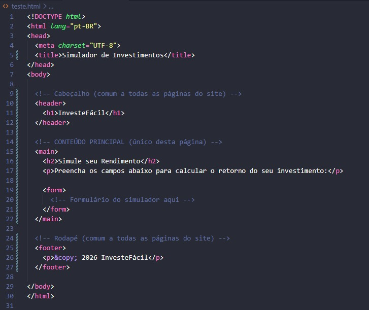
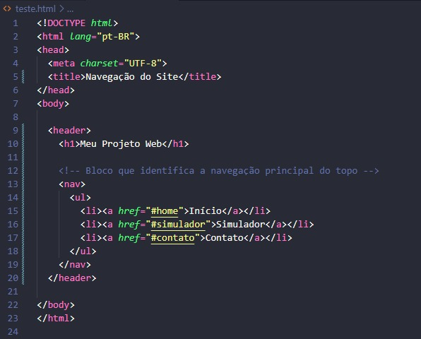
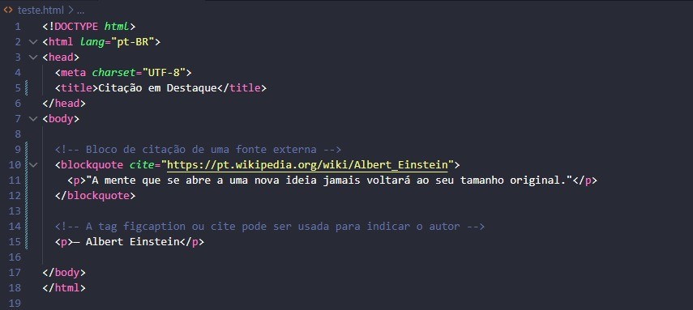
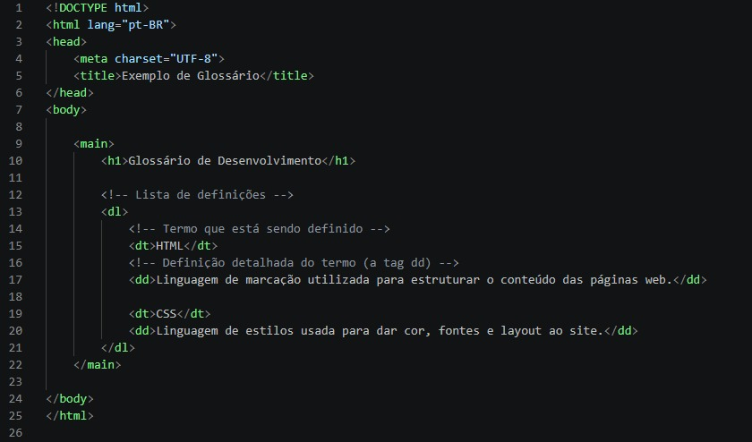
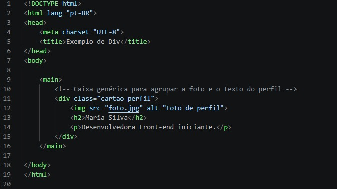
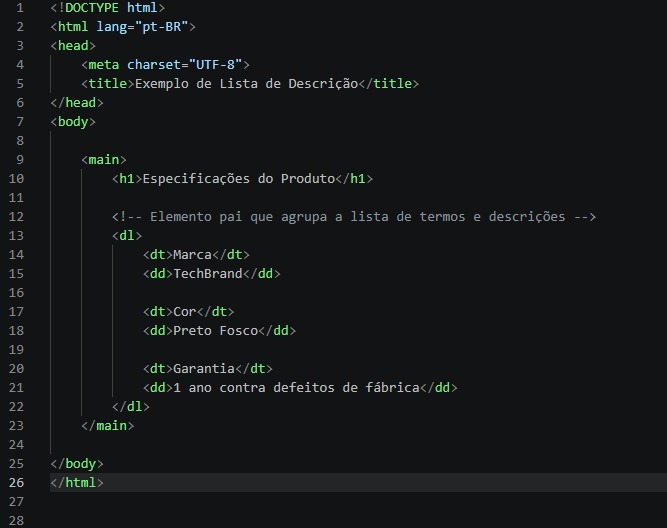

Agora chegou o momento em que eu apresento as tags e para o que elas servem
<html>
Pense no HTML como a construção de uma casa. Se o código do seu site fosse essa casa, a tag <html> seria a estrutura inteira — as paredes externas e o telhado que seguram tudo o que existe lá dentro.
Em termos simples, ela é o elemento raiz de um site. Quando o seu navegador (como o Chrome, Edge ou Safari) abre um arquivo, a tag <html> avisa para ele: "Ei, tudo o que estiver aqui dentro é o código que forma essa página da web!".
Dentro dessa "caixa" principal que é o <html>, você sempre vai dividir a casa em dois cômodos fundamentais: <head> e <body> que aprenderemos mais tarde
Além disso, a tag <html> tem uma função super importante para a acessibilidade e para buscas no Google. Você costuma usá-la assim: <html lang="pt-BR">. Esse pequeno detalhe (lang="pt-BR") avisa aos leitores de tela para pessoas com deficiência visual e aos motores de busca qual é o idioma principal da sua página.
Em resumo: nada em uma página web funciona sem a tag <html>, pois é ela quem abraça e organiza todo o resto do seu código!
Código html
<base>
Pense na tag <base> como o endereço de retorno impresso no cabeçalho de uma carta ou o cartaz de "Bem-vindo à Loja X" na entrada de um shopping. Se você encontrar um panfleto dentro da loja dizendo para ir até a "Seção de Brinquedos", você já sabe que o caminho começa a partir daquela loja específica, e não da sua casa. A tag <base> diz ao navegador: "Qualquer link relativo que você encontrar nesta página começa a partir daqui".
A tag <base> define o endereço URL padrão (o link base) para todos os links relativos de uma página web. Isso significa que, se você tiver vários links ou imagens que apontam para o mesmo site ou pasta, você só precisa colocar o endereço completo uma vez no cabeçalho (<head>) da página, e os outros links podem usar apenas o caminho curto.
Código base
href: É o atributo mais importante. Ele define a URL base (o endereço absoluto) que será usada como ponto de partida para todos os links e caminhos relativos da página.
target: Define como os links da página devem ser abertos por padrão (por exemplo, _blank para abrir todos os links em uma nova aba do navegador, ou _self para abrir na mesma aba).
<head>
Pense na tag <head> como os bastidores de um teatro ou o painel de controle de um avião. O público (que seria o usuário) não vê os bastidores enquanto assiste à peça, mas é lá que ficam os equipamentos, os roteiros, as instruções de luz e os figurinos organizados para que o show no palco funcione perfeitamente. No site, o <head> guarda as "regras e configurações" que o navegador precisa saber antes de desenhar a página na tela.
A tag <head> é o recipiente que armazena os metadados (dados sobre os dados) de uma página web. Ela fica localizada logo no início do documento HTML, antes do conteúdo visível. É dentro dela que colocamos o título que aparece na aba do navegador, a codificação de caracteres (para aceitar acentos), links para arquivos de estilo (CSS) e informações para os mecanismos de busca (como o Google). Nada do que está dentro do <head> aparece diretamente na área principal da página para o usuário.
Código head
A tag <head> em si não possui atributos obrigatórios ou muito comuns, pois ela funciona apenas como um "organizador" ou caixa para outras tags de configuração. Porém, as tags que moram dentro dela é que usam atributos importantes, como:
charset (na tag <meta>): Define o conjunto de caracteres (ex: UTF-8).
href (na tag <link>): Indica o caminho para arquivos externos, como folhas de estilo ou ícones.
name e content (na tag <meta>): Usados juntos para definir informações de SEO (como descrição da página) ou configurações de visualização em celulares.
<link>
Pense na tag <link> como um serviço de entrega ou encomenda que você contrata para a sua casa. A sua casa (o arquivo HTML) é o principal, mas você precisa buscar coisas de fora para equipá-la — como assinar uma revista de decoração (o arquivo CSS) ou encomendar um tapete novo. A tag <link> é o entregador que busca esses recursos externos e diz exatamente onde eles devem ser aplicados.
A tag <link> é usada para conectar recursos externos a um documento HTML. Ela é colocada obrigatoriamente dentro da tag <head>. A utilidade mais comum dela é carregar folhas de estilo (arquivos CSS) para colorir e organizar o visual da página, mas ela também serve para adicionar ícones na aba do navegador (favicon) e outras conexões úteis.
Código link
rel: Indica a relação entre o arquivo HTML atual e o arquivo externo que está sendo puxado (por exemplo, stylesheet para folhas de estilo ou icon para o ícone da aba).
href: Indica o caminho ou endereço (URL) do arquivo externo que você deseja carregar.
type: Descreve o tipo MIME do arquivo vinculado (como text/css), ajudando o navegador a entender o formato do que está sendo importado.
media: Especifica em quais tipos de tela ou dispositivos aquele recurso deve ser aplicado (muito usado para criar designs responsivos para celulares, impressoras, etc.).
<meta>
Pense na tag <meta> como a etiqueta de identificação afixada na lombada de um livro ou a ficha técnica na parte de trás de um eletrodoméstico. O leitor ou comprador não vai ler a etiqueta como se fosse a história do livro, mas é nela que estão descritas informações vitais: o idioma, o autor, a voltagem, se é bivolt e como ele deve funcionar.
A tag <meta> serve para fornecer metadados sobre o documento HTML — ou seja, informações sobre a página, que não aparecem visíveis na tela para o usuário. Ela é colocada obrigatoriamente dentro da tag <head>. É através dela que informamos ao navegador como ele deve exibir os caracteres (evitando que os acentos fiquem corrompidos), como o site deve se comportar em celulares (responsividade) e como os mecanismos de busca (como o Google) devem indexar a página.
Código meta
Como a tag <meta> é bem versátil, ela usa diferentes combinações de atributos dependendo do que você quer configurar:
charset: Especifica a codificação de caracteres do documento (o mais comum e recomendado é UTF-8).
name: Define o nome da propriedade de metadado que você está configurando (por exemplo, viewport, description, author, ou robots).
content: Especifica o valor correspondente ao atributo name (por exemplo, o texto da descrição ou as regras de escala para celulares).
http-equiv: Permite definir instruções especiais que simulam comandos de cabeçalho de servidor HTTP (como atualizar a página automaticamente a cada X segundos).
<style>
Pense na tag <style> como um estojo de tintas e pincéis dentro do próprio cômodo. Em vez de ir buscar as tintas em um depósito externo (como fazemos ao usar o <link> para carregar um arquivo CSS separado), você já deixa as regras de pintura e decoração guardadas ali mesmo, no mesmo ambiente.
Ela permite que você escreva código CSS direto dentro do arquivo HTML. Tudo o que for colocado entre <style> e </style> será interpretado pelo navegador como regras de design — como cores de fundo, tamanhos de fonte, espaçamentos e alinhamentos. Embora possa ser usada em qualquer lugar, o ideal é que fique sempre dentro do <head>.
media: Define em quais dispositivos ou situações aquele estilo específico deve ser aplicado (ex: media="print" aplica as cores e formatações apenas quando o usuário vai imprimir a página, e media="screen" aplica na tela).
type: Antigamente era usado para indicar a linguagem de estilo, como type="text/css". No HTML5 moderno ele se tornou opcional, pois o navegador já entende por padrão que o conteúdo é CSS.
<title>
Pense na tag <title> como a placa na porta de uma loja ou o título impresso na lombada de um livro. Mesmo quando o livro está fechado na estante ou a loja está no meio de uma avenida movimentada, é por esse nome que você identifica rapidamente o que está ali antes mesmo de entrar.
Ela define o texto principal que identifica a página. Esse texto não aparece no corpo do site em si, mas é exibido em três lugares fundamentais: na aba do navegador, nos resultados de pesquisa do Google (como a linha azul clicável) e como nome padrão ao salvar a página nos favoritos. Ela deve ser colocada obrigatoriamente dentro do <head>.
A tag <title> não utiliza atributos específicos no uso do dia a dia. Ela foi projetada para conter apenas texto simples e puro entre sua abertura <title> e seu fechamento </title>. Não é comum ou necessário colocar classes, IDs ou outros atributos nela.
<body>
Pense na tag <body> como o espaço físico de um salão de festas ou o showroom de uma loja. Enquanto o <head> guarda os bastidores, a fiação elétrica e as salas administrativas nos fundos, o <body> é a área onde os convidados entram, olham ao redor e interagem com os móveis, quadros, luzes e decorações.
Ela define todo o conteúdo visível da página web. Absolutamente tudo o que o usuário enxerga e clica no navegador — como textos, títulos, imagens, botões, formulários, vídeos e links — precisa estar obrigatoriamente dentro das chaves <body> e </body>. Só existe um <body> por documento HTML.
No HTML moderno, a maior parte dos estilos do <body> é feita via CSS, mas ele aceita os atributos globais e alguns eventos úteis:
onload: Executa um código (geralmente JavaScript) assim que a página termina de carregar completamente na tela.
onunload / onbeforeunload: Executa uma ação quando o usuário está prestes a fechar ou sair da página (como exibir um aviso de "Deseja salvar as alterações?").
class / id: Permite aplicar estilos CSS específicos ou manipulações via script em todo o corpo do site (muito usado para ativar um "modo escuro/dark mode" mudando a classe do <body>).
<address>
Pense na tag <address> como a assinatura no final de uma carta comercial ou o bloco de contato impresso no rodapé de um panfleto. Ela avisa a quem está lendo: "Estes dados aqui pertencem à pessoa ou empresa responsável por este documento".
Ela indica ao navegador e aos motores de busca (como o Google) que o texto ali dentro é a informação de contato do autor do documento ou de um artigo específico. Por padrão, os navegadores exibem o texto dentro de <address> em itálico, mas seu principal papel é dar sentido semântico ao conteúdo (ajudando no SEO e na acessibilidade).
A tag <address> não possui atributos específicos exclusivos. Ela aceita todos os atributos globais do HTML, como:
class: Usado para aplicar classes de estilização com CSS (para mudar a cor, fonte ou tirar o itálico padrão).
id: Define um identificador único para o bloco de contato caso você queira manipulá-lo via JavaScript ou criar um link direto para ele.
<article>
Pense na tag <article> como uma matéria de jornal ou um post impresso em uma revista. Se você recortar essa página da revista com uma tesoura e colá-la em um mural, ela ainda vai fazer sentido por si só, porque tem seu próprio título, texto, autor e contexto.
Ela indica ao navegador, a leitores de tela e ao Google que aquele bloco de código é um conteúdo autônomo e independente. Isso significa que a informação ali dentro poderia ser reutilizada, compartilhada ou publicada em outro lugar (como um feed de notícias) sem perder o sentido. É perfeita para artigos de blog, posts de fórum, produtos de uma loja virtual ou comentários de usuários.
A tag <article> não possui atributos específicos e exclusivos. Ela utiliza os atributos globais do HTML, sendo os principais:
class: Usada para estilizar o bloco do artigo com CSS (definindo bordas, espaçamento interno, sombras e fundo).
id: Identificador único, muito útil para criar links diretos que levam até um artigo específico na página.
itemscope / itemtype: Atributos de dados estruturados (Microdata) usados para informar ao Google detalhes do artigo (como quem escreveu ou a data) para aparecer melhor nos resultados de busca.
<aside>
Pense na tag <aside> como uma caixa de texto "Saiba Mais" na margem de uma revista ou como o painel de avisos na entrada de uma recepção. O artigo principal do jornal está no meio da folha, mas na lateral há uma caixinha com uma curiosidade, um link relacionado ou uma propaganda rápida.
Ela guarda conteúdos que estão indiretamete relacionados ao assunto principal da página, mas que não fazem parte do fluxo direto do texto. É usada para criar barras laterais (sidebars), blocos de publicidade, links para posts populares, cotações de moedas, caixas de autor ou widgets de redes sociais.
A tag <aside> não possui atributos específicos e exclusivos. Ela aceita os atributos globais do HTML:
class: Essencial para definir o visual da barra lateral no CSS (como fixá-la na lateral direita, mudar a cor de fundo ou ajustar a largura).
id: Identificador único para a barra lateral, útil se você quiser ocultá-la ou exibi-la via JavaScript (como em menus retráteis).
role: Usado para acessibilidade (ex: role="complementary"), avisando aos leitores de tela que aquele bloco é um conteúdo complementar.
<footer>
Pense no <footer> como o rodapé de um contrato, a última capa de um livro ou a placa de informação no chão do andar de um prédio. É onde ficam as assinaturas, direitos autorais, avisos legais e as direções finais para onde ir a seguir.
Ela define a área de encerramento do documento inteiro ou de um bloco interno (como um <article>). É o lugar padrão para colocar dados de direitos autorais (copyright), links para termos de uso, políticas de privacidade, redes sociais, mapa do site ou dados do autor.
A tag <footer> não tem atributos específicos exclusivos. Ela utiliza os atributos globais do HTML:
class: Usada para aplicar estilos CSS no rodapé (como colocar fundo escuro, fixar no final da tela ou organizar os links em colunas).
id: Permite identificar aquele rodapé específico caso haja mais de um na mesma página ou para criar um link de "Ir para o rodapé".
role: Pode usar role="contentinfo" para reforçar para leitores de tela que aquele bloco contém informações sobre o documento.
<header>
Pense no <header> como o topo da primeira página de um jornal impresso ou a recepção de um hotel. É onde você encontra logo de cara a marca da empresa, o título da edição, os botões de navegação e as informações principais que mostram onde você está.
Ela agrupa o conteúdo introdutório da página ou de um bloco específico (como um artigo). É a área padrão para colocar o logotipo do site, o menu de navegação principal, o título do projeto e campos de busca. Ela ajuda leitores de tela e motores de busca a identificarem rapidamente onde começa o topo e a navegação da sua aplicação.
A tag <header> não possui atributos específicos exclusivos. Ela utiliza os atributos globais do HTML:
class: Usada para aplicar formatações CSS (como fixar o menu no topo da tela enquanto o usuário rola a página, aplicar fundo transparente ou alterar cores).
id: Identificador único para a seção do cabeçalho, muito utilizado para referenciá-lo em scripts de manipulação dinâmica.
role: Pode receber role="banner" (quando usada como o cabeçalho principal da página) para reforçar sua função para tecnologias assistivas e leitores de tela.
<h1> ao <h6>
Pense nelas como a estrutura de tópicos de um livro:
<h1> é o Título do Livro (só existe um principal).
<h2> é o Capítulo (pode haver vários).
<h3> é a Seção (pode haver várias).
<h4> é a Subseção (pode haver várias).
<h5> é a Subsubseção (pode haver várias).
<h6> é a Subsubsubseção (pode haver várias).
Elas indicam ao navegador e ao Google a importância relativa do texto. O <h1> é o mais importante e o <h6> é o menos importante. Por padrão, os navegadores exibem o <h1> bem grande e o <h6> bem pequeno, mas o tamanho visual deve ser controlado pelo CSS, não pelas tags em si.
As tags <h1> a <h6> não possuem atributos específicos exclusivos, mas utilizam os globais:
class: Essencial para aplicar os estilos e padronizar o tamanho dos títulos com CSS.
id: Permite criar links internos na página (ex: <a href="#secao1"> leva direto ao <h2 id="secao1">).
<main>
Pense na tag <main> como o prato principal de um refeição ou a matéria de capa de um jornal. Você pode ter a entrada (cabeçalho), o acompanhamento (barra lateral) e a sobremesa/conta (rodapé), mas o <main> é exatamente o motivo pelo qual você sentou para comer.
Ela agrupa todo o conteúdo exclusivo e principal do documento. Tudo o que fica dentro do <main> deve ser diretamente relacionado ao tema central da página e não deve se repetir em outros lugares do site (como menus de navegação, rodapés, informações de direitos autorais ou logos). Deve existir apenas um <main> visível por página.

A tag <main> não possui atributos específicos e exclusivos. Ela aceita os atributos globais do HTML:
class: Usada para aplicar o layout principal no CSS (como definir a largura máxima da página, centralizar o conteúdo na tela ou ajustar o espaçamento).
id: Permite criar links do tipo "Pular para o conteúdo principal" (<a href="#conteudo-principal">), o que melhora bastante a acessibilidade para quem navega usando apenas o teclado.
role: Pode receber role="main" para garantir compatibilidade com navegadores ou leitores de tela mais antigos.
<nav>
Pense na tag <nav> como a placa de sinalização em um shopping ou o índice nas primeiras páginas de um livro. Ela avisa claramente ao visitante: "Aqui estão os caminhos para você se locomover para os principais pontos deste lugar"
Ela indica ao navegador, ao Google e aos leitores de tela que o bloco de links ali dentro serve para a navegação principal do site. Nem todos os links da página precisam de um <nav> (links soltos dentro de um parágrafo não precisam), mas ele deve ser usado nos menus principais do cabeçalho, menus do rodapé, índices de artigos ou páginas de paginação (1, 2, 3...).

A tag <nav> não possui atributos específicos exclusivos. Ela utiliza os atributos globais do HTML:
class: Usada para aplicar formatações CSS no menu (como transformar a lista vertical em uma barra horizontal, alinhar os botões ou criar um menu hambúrguer para celular).
aria-label: Usado para diferenciar múltiplos menus na mesma página (ex: <nav aria-label="Navegação principal"> no topo e <nav aria-label="Navegação do rodapé"> no final da página), ajudando leitores de tela a identificarem a função de cada um.
id: Identificador único para a seção de navegação, muito utilizado para aplicar estilos ou controlar a abertura e fechamento do menu via JavaScript.
<section>
Pense na tag <section> como os capítulos de um livro ou as seções de um supermercado (Seção de Hortifrúti, Seção de Padaria, Seção de Limpeza). Toda a loja está sob o mesmo teto, mas os produtos são agrupados por assunto para que ninguém se perca.
Ela serve para agrupar conteúdos que possuem o mesmo tema dentro de um documento. Diferente de uma simples caixa neutra (como a <div>), a <section> tem valor semântico: ela avisa ao navegador e ao Google que aquele bloco é uma parte relevante da página. Uma boa prática de acessibilidade e organização é colocar um título (<h2> a <h6>) no início de cada <section>.
A tag <section> não possui atributos específicos exclusivos. Ela faz uso dos atributos globais do HTML:
class: Usada para aplicar estilos CSS comuns a todas as seções ou estilos específicos para um bloco (como aplicar fundo zebrado ou alterar espaçamentos internos).
id: Fundamental para navegação por links internos (âncoras). Se você criar um link <a href="#resultados">, a página rolará suavemente até a <section id="resultados">.
aria-labelledby: Conecta a <section> diretamente ao ID do título que a nomeia, melhorando a leitura para softwares leitores de tela usados por pessoas com deficiência visual.
<blockquote>
Pense na tag <blockquote> como a caixa de citação em destaque no meio de uma matéria de revista ou a frase colocada entre aspas grandes em um slide de apresentação. Ela serve para dar peso e destaque visual a algo dito por outra pessoa ou extraído de outra fonte.
Ela indica ao navegador, a leitores de tela e ao Google que aquele bloco de texto é uma citação longa vinda de uma fonte externa. Por padrão, os navegadores exibem o conteúdo dentro de <blockquote> com uma margem recuada nas laterais, dando o aspecto visual de bloco destacado em relação ao texto comum.

cite: Especifica a URL/endereço da fonte original de onde a citação foi retirada. Essa informação não aparece escrita diretamente na tela para o usuário, mas serve para robôs de busca e ferramentas de acessibilidade confirmarem a origem da citação.
class / id: Atributos globais usados para estilizar o bloco no CSS (como adicionar uma barra vertical na esquerda, mudar a cor de fundo ou aplicar aspas decorativas).
<dd>
Pense em um dicionário ou em um glossário de termos. Você olha para a palavra em negrito (o termo) e, logo abaixo dela, encontra a definição detalhada explicando o que aquela palavra significa. A tag <dd> é exatamente esse texto explicativo que acompanha o termo.
Na prática, <dd> significa Description Details (Detalhes da Descrição) e serve para fornecer a definição ou o valor correspondente a um termo. Ela sempre trabalha em equipe dentro de uma lista de descrições (<dl>), vindo logo após a tag de termo (<dt>). Os navegadores costumam dar um pequeno recuo automático à esquerda para destacar visualmente a explicação.

A tag <dd> não possui atributos obrigatórios ou exclusivos, mas aceita os atributos globais padrão do HTML:
class e id: Úteis se você quiser estilizar uma definição específica com CSS ou manipulá-la via JavaScript.
<div>
Pense em uma caixa de papelão vazia ou em uma gaveta organizadora. Por si só, a caixa não tem uma função específica — ela não é um livro nem um sapato —, mas ela serve para agrupar e organizar vários objetos juntos para que você possa transportá-los ou arrumá-los facilmente. A tag <div> é exatamente essa caixa coringa no HTML.
Na prática, <div> significa Division (Divisão) e serve como um contêiner genérico para agrupar outros elementos HTML. Ela não tem nenhum significado semântico por si só (ou seja, não diz ao navegador o que é o conteúdo lá dentro), sendo usada principalmente para aplicar estilos com CSS ou estruturar blocos para o JavaScript manipular.

A tag <div> não possui atributos exclusivos, mas como é um elemento puramente estrutural, ela depende fortemente dos atributos globais:
class e id: Os mais importantes para a <div>. Eles servem para dar um "nome" à caixa, permitindo que o CSS pinte o fundo, mude bordas ou crie grades (layouts), e que o JavaScript encontre esse bloco facilmente.
Dica de ouro: Como a <div> não tem significado semântico (ao contrário de <main>, <nav> ou <section>), evite usá-la para tudo. Sempre dê preferência a tags que explicam o que o conteúdo é. Use a <div> apenas quando nenhum outro elemento semântico se encaixar bem.
<dl>
Pense em um cardápio de restaurante onde o nome do prato vem em destaque e, logo abaixo, vem a lista dos ingredientes que o compõm, ou em um dicionário completo. A tag <dl> é a estrutura geral da página do dicionário ou do cardápio — a grande moldura que agrupa todos os pares de termos e descrições.
Na prática, <dl> significa Description List (Lista de Descrição) e serve para criar uma lista onde cada item consiste em um termo acompanhado da sua respectiva descrição. Ela funciona como o elemento "pai" que guarda obrigatoriamente as tags de termo (<dt>) e as tags de descrição (<dd>) que vimos agorinha pouco.

A tag <dl> não possui atributos obrigatórios ou exclusivos, mas aceita os atributos globais padrão do HTML:
class e id: Extremamente úteis para estilizar a lista inteira via CSS (por exemplo, para colocar uma linha divisória entre os itens ou alinhar os termos lado a lado com as descrições usando tecnologias modernas de layout).
<dt>
Pense nas palavras em destaque no dicionário ou nos rótulos dos campos em um formulário de cadastro (como "Nome:", "E-mail:", "Senha:"). A tag <dt> é exatamente o rótulo ou o termo principal que fica esperando a sua explicação ou valor correspondente.
<figcaption>
Pense na tag <figcaption> como a legenda impressa logo abaixo de uma foto em um livro didático ou o rótulo de uma obra em um museu. A obra ou imagem traz o visual, mas a legenda dá o contexto: diz quem tirou a foto,
Ela fornece uma legenda visual e semântica para o conteúdo que está dentro da tag <figure> (como imagens, ilustrações, gráficos ou trechos de código). Ela conecta o texto diretamente à imagem para que leitores de tela e robôs de busca entendam que aquela frase específica pertence àquela imagem. Ela deve ser colocada sempre como primeira ou última filha dentro de uma tag <figure>.
A tag <figcaption> não possui atributos específicos exclusivos. Ela utiliza os atributos globais do HTML:
class: Essencial para estilizar a legenda no CSS (como diminuir o tamanho da fonte, mudar a cor do texto para cinza ou centralizar o texto abaixo da imagem).
id: Permite identificar aquela legenda caso você queira fazer referência a ela em outra parte do texto ou via JavaScript.
<figure>
Pense na tag <figure> como a moldura de um quadro em uma galeria ou a caixa destacada com uma figura em um livro didático. Ela agrupa a imagem, o gráfico ou a ilustração junto com a sua legenda, mantendo tudo unido como uma unidade completa.
Ela serve para encapsular conteúdos de mídia autônomos que ilustram ou complementam o texto principal. É usada para agrupar imagens (), gráficos, diagramas, ilustrações, trechos de código ou tabelas. Se você mover esse bloco <figure> para o final da página ou para um anexo, o texto principal continua fazendo sentido por si só.
A tag <figure> não possui atributos específicos exclusivos. Ela faz uso dos atributos globais do HTML:
class: Muito usada para definir bordas, alinhamentos (centralizado, à esquerda, à direita), fundos e margens do bloco no CSS.
id: Permite criar links diretos que levam até aquela imagem ou figura específica no texto (ex: <a href="#figura1">Ver Figura 1</a>).
<hr>
Pense na tag <hr> como o fim de um capítulo em um romance com três asteriscos ()* no meio da página, ou como a linha horizontal que separa duas seções em um formulário impresso. Ela indica uma mudança de assunto sem precisar mudar de página.
Ela representa uma quebra temática no nível de parágrafo. Antigamente usada apenas para desenhar uma linha cinza, no HTML5 moderno ela tem função semântica: avisar a leitores de tela e ao Google que houve uma alteração no tópico ou no fluxo do conteúdo. É uma tag auto-closing (não precisa de ).
No HTML5, todos os atributos visuais antigos da tag <hr> (como align, color, noshade, size e width) foram descontinuados. A aparência deve ser controlada exclusivamente via CSS. Atualmente, ela utiliza apenas os atributos globais:
class: Usada para criar estilos personalizados no CSS (linhas pontilhadas, degradês, espessuras diferentes).
id: Permite identificar uma separação específica ou manipular sua visibilidade via JavaScript.
<li>
Pense na tag <li> (List Item) como cada linha numerada de uma lista de compras ou cada marcador (bullet) em uma receita. A lista inteira é a folha de papel, mas o <li> é a maçã, o leite ou o pão anotados nela.
Ela define um item pertencente a uma lista. A tag <li> obrigatoriamente precisa estar dentro de um elemento pai que organize a lista, como uma lista não ordenada (<ul>), uma lista ordenada (<ol>) ou uma lista de menu (<menu>).
value (apenas quando usada dentro de <ol>): Define manualmente o número de início daquele item específico na sequência numerada (ex: <li value="10"> fará o número desse item ser 10, e o próximo 11).
class / id: Atributos globais para estilizar itens específicos com CSS (como colocar um ícone personalizado no lugar do marcador padrão ou aplicar bordas).
<menu>
Pense na tag <menu> como o menu de opções de um caixa eletrônico ou o menu suspenso (menu de contexto) que aparece ao clicar com o botão direito do mouse em uma pasta do computador. Ela agrupa uma série de ações e ferramentas disponíveis para o usuário executar.
Ela funciona de forma praticamente idêntica à tag <ul> (lista não ordenada), sendo preenchida por itens <li>. No entanto, enquanto a <ul> é usada para listas de conteúdos ou navegação entre páginas, o <menu> é semanticamente destinado a agrupar comandos e botões interativos de uma aplicação (como barras de ferramentas, ações de formulário ou menus operacionais).
No HTML moderno, os antigos atributos visuais ou de criação de menu de contexto (como type="toolbar" ou label) foram descontinuados. Hoje o <menu> aceita os atributos globais do HTML:
class: Essencial para estilizar a barra de ferramentas ou menu de botões via CSS (removendo marcadores de lista e organizando os botões lado a lado).
id: Usado para identificar o bloco de comandos e manipulá-lo via JavaScript.
<ol>
Pense na tag <ol> (Ordered List) como um passo a passo de uma receita de bolo, um ranking de classificação de um campeonato ou um tutorial de instalação. A ordem dos itens faz toda a diferença: o passo 1 precisa vir antes do passo 2.
Ela define uma lista cujos itens possuem uma ordem lógica ou cronológica. Por padrão, o navegador exibe os itens internos (
) numerados automaticamente (1, 2, 3...). Se você adicionar, remover ou reordenar um item no código, o navegador renumera toda a lista sozinho.
A tag <ol> possui atributos específicos muito úteis para controlar a numeração:
type: Define o tipo do marcador numérico/alfabético:
1 (padrão): Números (1, 2, 3...)
a: Letras minúsculas (a, b, c...)
A: Letras maiúsculas (A, B, C...)
i: Números romanos em minúsculo (i, ii, iii...)
I: Números romanos em maiúsculo (I, II, III...)
start: Define por qual número ou letra a lista deve começar (ex: <ol start="5"> começa a contar a partir do número 5).
reversed: Um atributo booleano (sem valor) que faz a contagem ser regressiva (ex: 3, 2, 1).
class / id: Atributos globais para estilizar as margens, cores ou fontes dos números via CSS.
<p>
Pense na tag <p> como os parágrafos de um livro, artigo de jornal ou redação. Sempre que você conclui uma ideia e dá um "Enter" para começar um novo bloco de texto, você está criando um novo parágrafo.
Ela agrupa um bloco de texto corrido. Por padrão, os navegadores adicionam automaticamente um pequeno espaçamento (margem) antes e depois de cada tag <p>, separando visualmente as ideias e tornando a leitura mais confortável. É a tag mais utilizada para exibir textos declarativos, explicações e descrições na Web.
No HTML moderno, os antigos atributos visuais da tag <p> (como align="center") foram descontinuados. A aparência deve ser controlada via CSS. Ela utiliza apenas os atributos globais:
class: Usada para aplicar estilos de texto via CSS (como alterar tamanho da fonte, cor, alinhamento ou espaçamento entre linhas).
id: Identificador único para referenciar um parágrafo específico via CSS ou alterar seu texto dinamicamente com JavaScript.
<pre>
Pense na tag <pre> (Preformatted Text) como uma página de máquina de escrever ou uma folha de papel quadriculado. Tudo o que você digita nela — cada espaço duplo, cada quebra de linha e cada tabulação — é preservado exatamente do jeito que foi digitado.
Por padrão, os navegadores ignoram múltiplos espaços e quebras de linha no código HTML comum. A tag <pre> desativa esse comportamento: ela mantém todos os espaços em branco e quebras de linha exatamente como estão no seu código-fonte. Por padrão, ela exibe o texto usando uma fonte monoespaçada (onde todas as letras têm a mesma largura, como Courier ou Consolas), sendo perfeita para exibir trechos de código, arte em ASCII ou logs do sistema.
No HTML moderno, atributos antigos como cols e width foram descontinuados. A tag <pre> utiliza os atributos globais do HTML:
class: Muito usada para aplicar estilização de sintaxe e cor de fundo com bibliotecas CSS (como Prism.js ou Highlight.js) ao exibir códigos.
id: Identificador único para referenciar ou atualizar o bloco de texto pré-formatado via JavaScript (por exemplo, ao exibir logs em tempo real).
<ul>
Pense na tag <ul> (Unordered List) como uma lista de compras do mercado ou uma lista de ingredientes de uma receita. A ordem em que você compra o leite ou o pão não importa: o essencial é que todos os itens estejam agrupados ali na mesma lista.
Ela define uma lista onde a ordem dos itens não possui prioridade cronológica ou numérica. Por padrão, os navegadores exibem cada item filho (
) com uma pequena bolinha preta (bullet point) na frente. É uma das tags mais versáteis do HTML, sendo a estrutura padrão para criar listas de tópicos, menus de navegação, galerias de cards ou listas de links.
No HTML moderno, o antigo atributo visual type (que mudava a bolinha para quadrado ou círculo no HTML) foi descontinuado. A personalização do marcador deve ser feita exclusivamente via CSS (usando list-style-type ou list-style: none). Atualmente, ela utiliza os atributos globais do HTML:
class: Essencial para aplicar estilos CSS (como remover as bolinhas padrões, transformar os itens em botões lado a lado ou ajustar os alinhamentos).
id: Identificador único para a lista, muito utilizado para referenciar menus ou manipulá-los dinamicamente via JavaScript.
<a>
Pense na tag <a> como uma ponte ou uma placa de sinalização com setas em uma estrada. Quando você lê a placa e decide segui-la, ela te transporta de um lugar (onde você está) para um destino totalmente novo (como outra cidade ou outro site).
Na prática, ela serve para criar links clicáveis. Quando o usuário clica no texto ou imagem que está dentro dessa tag, o navegador abre uma nova página da web, um arquivo ou até mesmo outra seção da mesma página.
Principais atributos
href (Hypertext Reference): É o atributo mais importante! Ele define o destino do link (pode ser o link de outro site, como no exemplo acima, ou o caminho para outra página do seu próprio projeto).
target: Define como o link vai abrir. Se você colocar target="_blank", o link abrirá em uma nova aba do navegador, em vez de sair da sua página atual.
<abbr>
Pense na tag <abbr> como aquelas etiquetas explicativas em um museu ou uma nota de rodapé em um livro. Quando você lê uma sigla ou abreviação difícil, a etiqueta está ali discretamente para te dar o significado completo caso você queira saber mais.
Na prática, ela serve para marcar abreviações ou siglas no texto. Ela avisa aos navegadores e leitores de tela (tecnologias assistivas) que aquele trecho é uma forma reduzida de uma palavra maior, permitindo que o significado completo seja revelado (geralmente aparecendo como uma caixinha de texto — tooltip — quando o usuário passa o mouse por cima).
Principais atributos
title: É o atributo essencial aqui. É nele que você escreve o significado completo da abreviação ou sigla. É o texto que vai aparecer na caixinha de dicas quando o usuário passar o cursor do mouse.
<b>
Pense na tag <b> como usar um marca-texto ou passar uma caneta mais grossa em uma palavra específica em um papel para chamar a atenção dos olhos de quem está lendo.
Na prática, ela serve para deixar o texto em negrito. É importante saber que ela faz isso puramente pelo visual: ela destaca a palavra sem dar nenhuma importância especial ou peso semântico para programas de computador (como leitores de tela para deficientes visuais).
Principais atributos
Atributos globais: A tag <b> não tem um atributo próprio e exclusivo obrigatório. No entanto, ela aceita todos os atributos globais do HTML, como o class ou style, caso você queira mudar a cor ou a intensidade desse negrito usando CSS.
<bdi>
Pense na tag <bdi> como uma cabine com isolamento acústico em uma sala cheia de barulho. Ela protege o texto que está lá dentro para que a direção da escrita de um idioma não "atrapalhe" ou misture as coisas com o idioma ao redor.
Na prática, ela isola um trecho de texto que pode ser escrito em uma direção diferente (como o Árabe ou Hebraico, que são escritos da direita para a esquerda) do restante da página (que é em Português, da esquerda para a direita). Isso evita que o navegador se confunda e embaralhe a ordem das palavras ou pontuações ao lado.
Principais atributos
Atributos globais: Assim como a tag <b>, a <bdi> não possui atributos obrigatórios exclusivos. Ela utiliza os atributos globais do HTML (como class, id ou lang), pois a sua principal mágica de isolamento já acontece automaticamente pelo navegador através do próprio motor de texto.
<bdo>
Pense na tag <bdo> como olhar para um texto através de um espelho. Ela pega o que está escrito e força a direção dos caracteres a se inverterem completamente, de trás para frente, quer o leitor queira ou não.
Na prática, ela serve para forçar a inversão da direção de um texto. Enquanto a tag <bdi> apenas isola o texto para proteger o layout, a <bdo> manda o navegador desenhar as letras em sentido contrário (da direita para a esquerda ou vice-versa), o que é útil para efeitos visuais específicos ou correções de direção forçada.
Principais atributos
dir (Direction): É o atributo obrigatório e o coração da tag. Ele define para qual lado o texto deve ser forçado. Os valores mais comuns são rtl (Right-to-Left / da direita para a esquerda) e ltr (Left-to-Right / da esquerda para a direita).
<br>
Pense na tag <br> como apertar a tecla "Enter" em uma máquina de escrever ou em um editor de texto. Ela simplesmente diz: "acabou a linha atual, agora continue escrevendo a partir da linha de baixo".
Na prática, ela insere uma quebra de linha simples no texto. Ao contrário de um parágrafo (
), que cria um espaço grande e pula uma linha inteira com margem, a tag <br> apenas força o texto a continuar na linha imediatamente abaixo, sem criar um novo bloco. Curiosidade: ela é uma tag vazia, ou seja, não precisa de uma tag de fechamento (não existe </br>).
Principais atributos
Atributos globais: A tag <br> não possui atributos próprios ou obrigatórios. Ela aceita apenas os atributos globais (como class ou style), caso você precise estilizar algo com CSS, embora seja usada puramente para a estrutura do texto.
<cite>
Pense na tag <cite> como a plaquinha de identificação ao lado de uma obra de arte em um museu ou a citação de um autor na contrapa de um livro. Ela serve para apontar educadamente quem é o criador daquela ideia.
Na prática, ela serve para indicar o título de uma obra (como um livro, um filme, um poema, uma música ou um artigo). Por padrão, os navegadores costumam exibir o texto dentro dessa tag em itálico, mas o objetivo principal dela vai além do visual: ela avisa aos buscadores e leitores de tela que ali está o título de uma referência artística ou literária.
Principais atributos
Atributos globais: A tag <cite> não possui atributos exclusivos ou obrigatórios. Ela utiliza apenas os atributos globais do HTML (como class, id ou title), permitindo que você mude a estilização visual dela com CSS caso não queira usar o itálico padrão.
<code>
Pense na tag <code> como aquela fonte especial de computador (tipo Courier) que aparece em manuais técnicos ou apostilas de programação, ou um bloco onde o professor escreve um comando de computador no quadro negro para destacar que aquilo é um código executável.
Na prática, ela serve para exibir um trecho de código de computador dentro do texto. Por padrão, o navegador muda a fonte para uma fonte monoespaçada (onde todas as letras têm a mesma largura, como print()), avisando visualmente e semanticamente que aquilo é uma instrução de programação e não um texto comum.
Principais atributos
Atributos globais: A tag <code> não tem atributos próprios ou obrigatórios. Ela aceita apenas os atributos globais do HTML (como class ou id), sendo que o atributo class é muito usado junto com bibliotecas de formatação (como Prism.js ou Highlight.js) para dar cores bonitas ao código na tela.
<data>
Pense na tag <data> como a etiqueta de um produto no supermercado. Na frente, para o cliente ver, está escrito um texto amigável (ex: "Promoção de Verão"). Mas, colado no código de barras invisível atrás, há um número de identificação exato para o computador do caixa ler sem erros.
Na prática, ela serve para vincular um texto legível para humanos a uma máquina (um valor legível por máquinas). Ela ajuda softwares, buscadores (como o Google) e sistemas de inventário a entenderem exatamente o dado por trás de um texto, sem alterar o que o usuário humano lê na tela.
Principais atributos
value: É o atributo obrigatório (ou o mais importante) da tag. É nele que você coloca o valor traduzido para a máquina entender (como uma data no formato padrão 2026-08-21, um código de produto, ou um número de ID), enquanto o texto visível fica fora do atributo.
<dfn>
Pense na tag <dfn> como a primeira vez que um termo novo é introduzido e explicado em um glossário ou no final de um capítulo de livro didático (por exemplo: "Bug: um erro inesperado no software"). Ela marca o momento exato em que a palavra ganha a sua definição oficial.
Na prática, ela serve para indicar que aquele é o exato momento em que um termo está sendo definido pela primeira vez em um texto. Visualmente, os navegadores costumam colocar esse termo em itálico, mas o seu superpoder real é semântico: ela diz aos buscadores e leitores de tela: "Preste atenção, aqui está o significado oficial deste conceito".
Principais atributos
Atributos globais: A tag <dfn> não possui atributos próprios ou obrigatórios. Ela utiliza apenas os atributos globais do HTML (como class ou id). Um detalhe legal é que se você colocar o atributo title na própria tag <dfn> ou em um elemento pai (<abbr>), alguns navegadores usam isso para ajudar na dica de contexto.
<em>
Pense na tag <em> como a inflexão ou o tom de voz que você usa ao falar uma palavra com mais força em uma conversa para mudar o sentido da frase. Por exemplo, dizer "Eu realmente adorei o projeto" dá um peso totalmente diferente de dizer apenas "Eu adorei o projeto".
Na prática, ela serve para dar ênfase por importância a um trecho de texto. Visualmente, os navegadores exibem o conteúdo dentro dela em itálico. Mas a grande diferença dela para uma simples estilização visual é o sentido: ela avisa aos leitores de tela para mudarem o tom de voz da leitura, dando mais destaque àquela palavra específica.
Principais atributos
Atributos globais: A tag <em> não possui atributos exclusivos ou obrigatórios. Ela aceita apenas os atributos globais do HTML (como class, id ou style), permitindo que você mude a cor ou o estilo da fonte com CSS caso queira destacar a ênfase de um jeito diferente do itálico padrão.
<i>
Pense na tag <i> como usar letras inclinadas para o lado em uma palavra estrangeira, no nome de um navio ou em um pensamento interno num livro. É uma mudança puramente no visual para separar a palavra do resto do texto padrão.
Na prática, ela serve para deixar o texto em itálico. A diferença principal entre ela e o <em> é que o <em> dá importância e ênfase (mudando o tom de voz), enquanto a tag <i> é usada para fins técnicos ou visuais onde o tom de voz não muda — como termos em outro idioma, nomes de espécies científicas, pensamentos ou termos técnicos.
Principais atributos
Atributos globais: A tag <i> não possui atributos próprios ou obrigatórios. Ela aceita todos os atributos globais do HTML (como class, style ou o lang que usamos no exemplo acima para indicar que o texto é de outro idioma).
<kbd>
Pense na tag <kbd> como aquelas teclas desenhadas em manuais de videogames ou de computadores (como aquela caixinha desenhada ao redor da letra "A" ou "Ctrl"). Ela simula visualmente a tecla física de um teclado.
Na prática, ela serve para indicar entrada de texto feita pelo usuário através do teclado ou de comandos de atalho. Por padrão, os navegadores costumam exibi-la usando uma fonte monoespaçada (estilo máquina de escrever), destacando que aquilo representa uma tecla que a pessoa deve pressionar.
Principais atributos
Atributos globais: A tag <kbd> não possui atributos próprios ou obrigatórios. Ela aceita apenas os atributos globais do HTML (como class ou id), permitindo que você estilize com CSS para que pareça uma tecla de verdade com bordinhas e cor de fundo, por exemplo.
<mark>
Pense na tag <mark> como passar um marca-texto amarelo fosforescente em cima de uma frase importante em uma apostila ou livro para encontrá-la rapidamente depois.
Na prática, ela serve para destacar trechos de texto que são relevantes para o contexto atual do usuário. Por padrão, os navegadores exibem o texto dentro dela com um fundo amarelo brilhante (estilo marcador de texto). Ela é muito usada em resultados de ferramentas de busca para mostrar exatamente a palavra que o usuário pesquisou.
Principais atributos
Atributos globais: A tag <mark> não possui atributos próprios ou obrigatórios. Ela aceita apenas os atributos globais do HTML (como class ou style), o que é ótimo se você quiser mudar a cor padrão do marcador de texto usando CSS para combinar com o design do seu site.
<q>
Pense na tag <q> como aquelas aspas flutuantes de jornal ou revista que destacam uma frase rápida dita por alguém. É como se você estivesse conversando com um amigo e dissesse: “E então ele me disse: 'vai dar tudo certo'”.
Ela serve para indicar que um trecho curto de texto é uma citação (uma frase dita por outra pessoa). Na prática, o navegador coloca automaticamente aspas ao redor do texto que estiver dentro dela, sem que você precise digitar as aspas no teclado. É um jeito elegante e organizado de mostrar que aquela fala não é sua.
A tag <q> conta com um atributo específico bem interessante, além dos globais:
cite: Serve para colocar o link (o endereço web) de onde você tirou aquela citação. Detalhe importante: os navegadores geralmente não mostram esse link na tela para o visitante comum, mas ele é excelente para leitores de tela (acessibilidade) e para os mecanismos de busca (como o Google) entenderem a origem da frase.
<rp>
Pense na tag <rp> como aquelas instruções de segurança reservas que vêm impressas na parte de dentro da caixa de um produto, que você só lê se o manual principal se perder ou estragar.
Ela é uma tag bem específica do HTML5 usada dentro de anotações "ruby" (que servem para mostrar a pronúncia de ideogramas asiáticos, como em japonês ou chinês). Na prática, a tag <rp> serve para fornecer parênteses de segurança (como ( e )). Se o navegador do usuário for super moderno, ele esconde esses parênteses e mostra a pronúncia bonitinha em cima do texto; mas, se o navegador for antigo e não entender a anotação, ele mostra os parênteses para o texto não ficar embaralhado.
A tag <rp> não possui nenhum atributo exclusivo dela. Ela utiliza apenas os atributos globais do HTML (como class e id), já que o papel dela é puramente estrutural e de suporte para navegadores antigos.
<rt>
Pense na tag <rt> (Ruby Text) como os pequenos guias de pronúncia (Furigana) impressos em tamanho reduzido logo acima dos caracteres chineses ou japoneses (Kanji) nos mangás, ou como as anotações de pronúncia fonética escritas acima de uma palavra em um dicionário.
Ela fornece a anotação ou o guia de pronúncia para os caracteres contidos dentro de um elemento pai <ruby>. Por padrão, o navegador pega o texto de dentro da tag <rt> e o exibe em um tamanho de fonte menor logo acima do texto principal. É utilizada principalmente em tipografia para idiomas do Leste Asiático (Japonês, Chinês, Coreano), mas também serve para anotações gramaticais e guias fonéticos em qualquer idioma.
A tag <rt> não possui atributos específicos exclusivos. Ela utiliza os atributos globais do HTML:
class: Usada para aplicar estilos via CSS (como alterar a cor do texto de anotação ou ajustar o tamanho da fonte da legenda).
id: Permite identificar aquele elemento de pronúncia específico para estilização ou manipulação via JavaScript.
<ruby>
Pense na tag <ruby> como a moldura que une a palavra original e a sua pronúncia. Em livros de idiomas ou dicionários, é o bloco que segura o caractere principal embaixo e a sua leiturinha em tamanho menor logo em cima, garantindo que os dois fiquem perfeitamente alinhados.
Ela serve para encapsular textos que exigem anotações acima ou ao lado das palavras (conhecidas como Ruby Annotations). É amplamente utilizada para indicar a pronúncia de ideogramas (como Kanji em japonês ou Hanzi em chinês), mas também pode ser usada para termos técnicos, acrônimos ou traduções palavra por palavra. Dentro dela, usam-se as tags <rt> (o texto da anotação) e <rp> (parênteses de fallback para navegadores antigos).
A tag <ruby> não possui atributos específicos exclusivos. Ela faz uso dos atributos globais do HTML:
class: Usada para aplicar formatações CSS (como definir o alinhamento do bloco, ajustar espaçamentos ou mudar a cor do texto base).
lang: Atributo global extremamente importante para a tag <ruby>, pois avisa ao leitor de tela e ao navegador qual idioma está sendo anotado (ex: lang="ja" para japonês ou lang="zh" para chinês).
id: Identificador único para a marcação.
<s>
Pense na tag <s> (Strikethrough) como a etiqueta de preço antigo em uma promoção de loja (de ~R$ 100,00~ por R$ 70,00) ou uma tarefa rabiscada em um bloco de notas porque já não é mais válida. O texto continua ali visível, mas a linha sobre ele avisa: "Isso não vale mais".
Ela indica semântica e visualmente que um conteúdo não é mais preciso, correto ou relevante, exibindo uma linha horizontal cortando o texto. É a tag perfeita para preços originais com desconto, especificações antigas de um produto ou itens cancelados/substituídos.
A tag <s> não possui atributos específicos exclusivos. Ela aceita os atributos globais do HTML:
class: Usada para estilizar a aparência da linha ou do texto no CSS (como mudar a cor do risco para vermelho ou aplicar opacidade para parecer apagado).
id: Permite identificar aquele trecho riscado específico para manipulação via JavaScript ou estilização individual.
<samp>
Pense na tag <samp> (Sample Output) como a tela de um caixa eletrônico exibindo "Saldo Insuficiente" ou a impressão do comprovante que sai de uma máquina de cartão. É a resposta visual imediata que um sistema dá após você realizar uma ação.
Ela serve para identificar o texto de saída (output) de um programa, terminal, aplicativo ou sistema. Por padrão, os navegadores exibem o conteúdo dentro da tag <samp> usando uma fonte monoespaçada (onde todas as letras têm a mesma largura, como Courier ou Consolas), diferenciando a resposta gerada pelo sistema do texto normal escrito por humanos.
A tag <samp> não possui atributos específicos exclusivos. Ela faz uso dos atributos globais do HTML:
class: Muito utilizada para estilizar a resposta no CSS (como criar caixas de alerta vermelhas para erros ou verdes para mensagens de sucesso).
id: Permite alterar dinamicamente o texto da mensagem de retorno do sistema via JavaScript (por exemplo, exibindo o resultado de um cálculo ou uma mensagem de validação na tela).
<small>
Pense na tag <small> como as letras miúdas no rodapé de um contrato, as condições de uma promoção no verso de um panfleto ou os direitos autorais na última página de um livro. O conteúdo é importante e obrigatório, mas não deve roubar a atenção do texto principal.
Ela representa comentários secundários, avisos de isenção de responsabilidade (disclaimers), termos de uso ou direitos autorais. Por padrão, os navegadores reduzem o tamanho da fonte do texto em um nível (geralmente para cerca de 80% do tamanho normal). No HTML5 moderno, ela ganhou função semântica para indicar que o texto é legalmente ou conceitualmente secundário.
A tag <small> não possui atributos específicos exclusivos. Ela aceita os atributos globais do HTML:
class: Usada para personalizar a cor do texto no CSS (como deixar o texto em um tom de cinza mais suave) ou ajustar ainda mais o tamanho da fonte.
id: Permite identificar aquele aviso ou nota específica para estilização individual ou manipulá-lo via JavaScript.
<span>
Pense na tag <span> como um marca-texto amarelo deslizando sobre uma palavra específica em um livro, ou como um adesivo colorido colado em uma única letra de um cartaz. Ela seleciona um pequeno pedaço da frase para que você possa alterá-lo sem afetar o resto da linha.
Ela é um contêiner genérico em linha (inline). Isso significa que, sozinha, ela não faz absolutamente nada: não pula linha, não aplica margem e não altera a fonte. Sua única função é "abraçar" uma palavra ou pequeno trecho de texto para que você possa aplicar estilos CSS (cores, tamanhos, fontes) ou manipular aquela parte específica com JavaScript, sem quebrar o fluxo natural da frase.
Como o <span> não tem valor semântico próprio, ele depende totalmente dos atributos globais para ter utilidade:
class: O mais importante. É o que você usa para ligar o <span> a uma regra de CSS (como no exemplo acima, aplicando cor verde a uma classe .destaque-lucro).
id: Essencial quando você precisa que o JavaScript encontre aquela palavra exata para atualizá-la dinamicamente (ex: <span id="resultado">0</span>).
<strong>
Pense na tag <strong> como a caneta marca-texto vermelha usada para destacar um aviso crítico em um contrato, ou como a voz de um instrutor dizendo uma instrução com tom firme. Ela indica: "Preste atenção aqui, este ponto é extremamente importante!".
Ela indica que o texto contido nela possui alta relevância semântica, urgência ou impacto. Por padrão, os navegadores exibem o texto em negrito. Além do impacto visual, ela avisa a leitores de tela e a motores de busca (como o Google) que aquele termo é fundamental para o contexto da página.
A tag <strong> não possui atributos específicos exclusivos. Ela aceita os atributos globais do HTML:
class: Usada para personalizar o estilo visual no CSS (como mudar a cor do texto destacado para vermelho ou aplicar um fundo colorido).
id: Permite identificar aquele ponto de destaque específico para estilos individuais ou manipulação via JavaScript.
<sub>
Pense na tag <sub> (Subscript) como os números pequenos das fórmulas químicas da tabela periódica (como o "2" da água, $\text{H}_2\text{O}$) ou como as anotações no pé da linha em equações matemáticas e notas de rodapé de livros.
Ela rebaixa a linha de base do texto e reduz ligeiramente o tamanho da fonte. O texto fica posicionado abaixo da linha normal do texto. É a tag indicada para fórmulas químicas, variáveis com índice numérico em algoritmos/matemática (ex: $x_1, x_2$) e pequenas marcações de rodapé.
A tag <sub> não possui atributos específicos exclusivos. Ela faz uso dos atributos globais do HTML:
class: Usada para personalizar o estilo via CSS (como ajustar o tamanho da fonte, alterar a cor do índice ou ajustar o deslocamento vertical).
id: Identificador único para manipular aquele valor específico via JavaScript.
<sup>
Pense na tag <sup> (Superscript) como o expoente de uma potência na matemática ($x^2$), o símbolo de grau de temperatura (25°C) ou o indicador de ordinal ($1^{\text{o}}$, $1^{\text{a}}$) e de marcas registradas ($\text{TM}$, $\text{\textregistered}$).
Ela eleva a linha de base do texto e reduz ligeiramente o tamanho da fonte. O texto dentro dela fica posicionado acima da linha normal do texto. É a tag ideal para expressões matemáticas com potências, marcas registradas, chamadas numéricas de notas de rodapé ou abreviações ordinais.
A tag <sup> não possui atributos específicos exclusivos. Ela utiliza os atributos globais do HTML:
class: Usada para aplicar estilizações via CSS (como alterar a cor da nota ou ajustar a elevação vertical).
id: Permite identificar aquele elemento específico para manipulação via JavaScript ou criar links diretos para notas de rodapé (ex: <a href="#nota1"><sup>1</sup></a>).
<time>
Pense na tag <time> como o carimbo de data e hora com código de barras em um bilhete de metrô ou protocolo de entrega. Para um humano lendo o bilhete, está escrito "22 de Ago", mas o leitor óptico lê o código exato no formato padrão (2026-08-22) sem nenhuma margem para dúvidas.
Ela serve para identificar conteúdos que representam momentos no tempo, como datas do calendário, horas do relógio ou durações (como o tempo de leitura de um artigo). Ela ajuda motores de busca (como o Google), leitores de tela e calendários do sistema a interpretarem corretamente a data, mesmo que no texto ela esteja escrita em formato amigável (ex: "hoje à tarde" ou "22/08/2026").
A tag <time> possui um atributo essencial:
datetime: O atributo mais importante. Define o valor exato da data ou hora em um formato padronizado legível por máquinas (ISO 8601), independente de como o texto está escrito dentro da tag para o usuário.
Apenas data: datetime="2026-08-22"
Data e hora: datetime="2026-08-22T19:30"
Duração: datetime="PT2H30M" (Significa período de 2 horas e 30 minutos).
class / id: Atributos globais usados para estilizar o formato da hora no CSS ou manipulá-la via JavaScript.
<u>
Pense na tag <u> (Underline) como a caneta vermelha usada para sublinhar uma palavra com grafia incorreta em uma redação escolar, ou como uma marcação feita para apontar um termo específico em um texto sem alterar o significado gramatical da frase.
No HTML5 moderno, ela deixou de ser um simples recurso estético e ganhou papel semântico: representa uma anotação não verbal embutida no texto. É usada para destacar palavras com erros ortográficos, nomes próprios em textos acadêmicos (como nomes chineses) ou termos específicos que precisam ser assinalados de forma distinta. Por padrão, os navegadores aplicam uma linha abaixo do texto. <br> Atenção em UX/UI: Evite usar a tag <u> em textos comuns da web, pois os usuários costumam confundir qualquer texto sublinhado com um link clicável ().
A tag <u> não possui atributos específicos exclusivos. Ela utiliza os atributos globais do HTML:
class: Essencial para personalizar o estilo da linha no CSS (como criar a linha ondulada vermelha para corretores ortográficos ou mudar a cor do sublinhado).
id: Permite identificar o elemento único para manipulação via JavaScript (por exemplo, remover o sublinhado após o usuário corrigir a palavra).
<var>
Pense na tag <var> (Variable) como a letra $x$ ou $y$ no quadro-negro durante uma aula de álgebra, ou como o nome do contêiner de armazenamento em uma receita ("adicione $N$ xícaras de farinha"). Ela sinaliza que aquele símbolo representa um valor que pode mudar.
Ela indica que o texto contido nela representa o nome de uma variável em uma expressão matemática, fórmula científica ou trecho de código de programação. Por padrão, os navegadores exibem o conteúdo dentro da tag <var> em itálico, separando o nome da variável do texto explicativo comum ao redor.
A tag <var> não possui atributos específicos exclusivos. Ela aceita os atributos globais do HTML:
class: Usada para aplicar estilos visuais no CSS (como trocar a fonte padrão em itálico para uma fonte monoespaçada ou mudar a cor das variáveis em uma fórmula).
id: Permite identificar uma variável específica para manipulá-la via JavaScript (por exemplo, ao substituir o símbolo pelo valor real calculado na tela).
<wbr>
Pense na tag <wbr> (Word Break Opportunity) como um hífen invisível de segurança em uma palavra gigante escrita na margem de um caderno. Ele diz: "Se a palavra não couber inteira no final da linha, pode cortá-la exatamente aqui para não estourar a margem!".
Ela indica ao navegador um ponto específico onde uma palavra muito longa pode ser quebrada em uma nova linha, caso não haja espaço suficiente na tela (como em dispositivos móveis). Ao contrário da tag <br> (que obriga o texto a pular de linha sempre), a tag <wbr> só quebra a linha se for estritamente necessário. Ela também não adiciona um hífen visual automático ao quebrar. É perfeita para URLs longas, endereços de e-mail, nomes de arquivos, caminhos de diretórios ou termos técnicos gigantescos.
A tag <wbr> é um elemento vazio (sem fechamento) e não possui atributos específicos. Ela aceita apenas os atributos globais do HTML:
class / id: Raramente utilizados na prática para essa tag, pois ela não renderiza conteúdo visual por si só (atua apenas como um marcador de instrução para o motor do navegador).
<area>
Pense na tag <area> como os botões invisíveis marcados sobre um mapa turístico impresso. O mapa é uma imagem só, mas ao tocar em um monumento ou cidade específica, você é direcionado para a página correspondente àquela atração.
Ela define uma região clicável (hotspot) com formato geométrico (retângulo, círculo ou polígono) dentro de um mapa de imagem (<map>). A tag <area> é sempre utilizada dentro do elemento <map>, que por sua vez se conecta a uma imagem <img> através do atributo usemap.
A tag <area> possui atributos específicos para delimitar o formato e a ação da região:
shape: Define a forma geométrica da área clicável (rect para retângulo, circle para círculo, poly para polígono ou default para toda a área restante da imagem).
coords: Especifica as coordenadas numéricas em pixels que desenham a forma no espaço da imagem.
href: Define o link de destino para onde o usuário será redirecionado ao clicar naquela área.
alt: Obrigatório quando o atributo href está presente. Texto alternativo descrevendo para onde o link leva (essencial para acessibilidade e leitores de tela).
target: Define onde abrir o link (ex: target="_blank" para abrir em uma nova aba).
<audio>
Pense na tag <audio> como um aparelho de som ou walkman embutido na sua página. Ele vem com os botões de play, pause, barra de progresso e controle de volume para que o usuário escolha quando e como quer ouvir o conteúdo sonoro.
Ela permite incorporar e reproduzir conteúdos de áudio (como efeitos sonoros, episódios de podcast, narrações ou faixas de música) diretamente no navegador, sem precisar de plugins externos ou scripts complexos. Suporta formatos populares como MP3, WAV e OGG.
A tag <audio> possui vários atributos nativos úteis para controlar a reprodução:
controls: Exibe os controles padrão do navegador (play, pause, volume, linha do tempo). Se não for colocado, o reprodutor fica invisível e exige comandos via JavaScript.
autoplay: Inicia o som automaticamente assim que a página carrega (nota: navegadores modernos bloqueiam o som com autoplay se o usuário não tiver interagido com a página antes).
loop: Faz o áudio reiniciar automaticamente do começo em um ciclo contínuo quando chega ao fim.
muted: Silencia o som por padrão ao carregar a página.
preload: Informa ao navegador como carregar o arquivo (auto carrega o áudio todo, metadata carrega só a duração/dados, none só baixa se o usuário clicar em play).
<img>
Pense na tag <img> como um porta-retratos instalado na parede do seu site. O porta-retratos em si não contém a foto desenhada nele; ele apenas possui um gancho apontando onde a foto física foi guardada e uma etiqueta descrevendo o que está retratado para quem não puder enxergar.
Ela insere arquivos de imagem gráficos (como PNG, JPG, WebP, SVG ou GIF) na página. A tag <img> é um elemento vazio (void element), o que significa que não possui tag de fechamento (</img>). O navegador busca o arquivo no caminho indicado e o desenha na tela.
A tag <img> depende diretamente dos seus atributos para funcionar:
src (Source): Obrigatório. Informa ao navegador o caminho (URL local ou externa) onde o arquivo de imagem está hospedado.
alt (Alternative Text): Obrigatório para acessibilidade. Descreve em texto o conteúdo da imagem. É lido por leitores de tela para pessoas com deficiência visual e exibido se a imagem falhar ao carregar.
width e height: Definem a largura e a altura da imagem em pixels. Reservam o espaço na tela antes mesmo da imagem baixar, evitando que a página dê saltos visuais durante o carregamento (Layout Shift).
loading: Controla o carregamento otimizado da imagem. O valor loading="lazy" adia o download da imagem até que o usuário role a página até perto dela, economizando dados e melhorando a performance.
<map>
Pense na tag <map> como a mosaico ou folha de gabarito transparente colocada sobre uma foto ou mapa. A foto em si é uma peça única, mas a folha <map> delimita regiões invisíveis e define o que acontece quando alguém toca em um ponto específico da foto.
Ela funciona como um contêiner para um mapa de imagem interativo (Image Map). A tag <map> agrupa uma ou mais tags <area> (que definem as formas geométricas clicáveis, como retângulos, círculos e polígonos). Ela se conecta à imagem gráfica (<img>) através da correspondência entre o atributo name do <map> e o atributo usemap da imagem.
A tag <map> depende principalmente do seu identificador de nome:
name: Atributo essencial. Define o nome do mapa de imagem. Esse valor deve ser exatamente igual ao informado no atributo usemap da tag <img> (precedido por #).
id: Atributo global usado para relacionar o mapa via CSS/JavaScript ou manter compatibilidade com versões do HTML.
<track>
Pense na tag <track> como a faixa de legendas selecionável do seu serviço de streaming favorito (como a Netflix). O arquivo de vídeo transmite apenas as imagens e o áudio gravados; já a tag <track> carrega o arquivo de texto sincronizado com o tempo (em formato .vtt) que mostra na tela o que está sendo dito ou descrito.
Ela insere legendas dinâmicas, faixas de audiodescrição, títulos de capítulos ou transcrições de acessibilidade dentro de elementos multimídia (<video> e <audio>). É um elemento vazio (void element, sem tag de fechamento) e utiliza arquivos no formato padrão WebVTT (Web Video Text Tracks).
A tag <track> exige a configuração de seus atributos para exibir as legendas corretamente:
src: Obrigatório. O caminho (URL) do arquivo de legenda ou faixa de texto (deve ter a extensão .vtt).
kind: Especifica o tipo de faixa de texto.
subtitles (padrão): Legendas para tradução de diálogos falados.
captions: Transcrição que inclui diálogos e efeitos sonoros (ex: [Música suave ao fundo]), essencial para pessoas com deficiência auditiva (CC - Closed Captions).
descriptions: Descrição textual em áudio sobre os eventos visuais no vídeo.
chapters: Títulos de capítulos para ajudar o usuário a navegar pelo vídeo.
srclang: O idioma da faixa de texto usando códigos ISO (ex: pt-br, en, es). Obrigatório se kind="subtitles".
label: O nome amigável que aparecerá no menu de seleção do player do usuário (ex: "Português Brasil", "Inglês").
default: Atributo booleano. Se presente, define essa legenda para carregar e ser exibida automaticamente ao dar o play.
<video>
Pense na tag <video> como uma televisão com reprodutor embutido na parede da sua página. Ela vem com a tela de exibição e pode conter os botões virtuais de play, pause, controle de volume, tela cheia e até a troca de legendas, sem depender de softwares de terceiros (como o antigo Flash).
Ela permite incorporar e exibir arquivos de vídeo de forma nativa (como MP4, WebM ou OGG) no navegador. Você pode usá-la tanto para criar um player de vídeo interativo completo para o usuário quanto para fundos animados (background video), tutoriais ou demonstrações do seu sistema.
A tag <video> oferece diversos atributos nativos para personalizar a experiência do usuário:
controls: Exibe a barra de controles padrão do navegador (play, pause, volume, tempo e tela cheia).
poster: URL de uma imagem para ser exibida como "capa" antes do vídeo ser reproduzido.
autoplay: Inicia o vídeo automaticamente assim que a página carrega (Nota: a maioria dos navegadores modernos só permite autoplay se o atributo muted também estiver presente).
muted: Silencia o áudio do vídeo por padrão.
loop: Faz o vídeo reiniciar do começo continuamente quando chega ao fim.
width / height: Definem as dimensões de exibição do player em pixels.
preload: Orienta o carregamento do arquivo (auto baixa o vídeo com a página, metadata baixa só dados básicos como duração, none só baixa se o usuário clicar em play).
<embed>
Pense na tag <embed> como uma tomada ou adaptador universal instalado na parede do seu site. Não importa se o dispositivo que você vai conectar é um reprodutor multimídia, um documento interativo ou um miniaplicativo: a tomada serve como uma janela genérica para renderizar essa aplicação externa dentro da sua estrutura.
Pense na tag <embed> como uma tomada ou adaptador universal instalado na parede do seu site. Não importa se o dispositivo que você vai conectar é um reprodutor multimídia, um documento interativo ou um miniaplicativo: a tomada serve como uma janela genérica para renderizar essa aplicação externa dentro da sua estrutura. Importante: Para vídeos e áudios nativos do HTML5 modernos, prefira usar as tags dedicadas <video> e <audio>. Para incorporar páginas HTML inteiras ou conteúdos como o Google Maps, costuma-se utilizar a tag <iframe>.
A tag <embed> utiliza atributos diretos para localizar e identificar a mídia:
src: Obrigatório. O caminho (URL local ou externa) da mídia ou arquivo que será incorporado.
type: Define o tipo MIME do arquivo (ex: application/pdf, video/mp4, image/svg+xml). Isso ajuda o navegador a entender qual leitor interno ou plugin deve ser ativado para processar aquele conteúdo.
width e height: Definem a largura e a altura em pixels (ou porcentagem) da área reservada para a mídia na tela.
class / id: Atributos globais para estilizar as bordas, sombras e layout da caixa via CSS.
<iframe>
Pense na tag <iframe> como um quadro na parede com uma tela de TV transmitindo outra sala. A parede é o seu site, mas a janela do quadro exibe em tempo real o conteúdo que está acontecendo em outro lugar — como um mapa do Google, um vídeo hospedado no YouTube ou até outro site inteiro.
Ela permite incorporar outro documento HTML dentro da sua própria página. O navegador cria um contexto de navegação completamente separado para essa janela embutida. É a tag padrão usada para integrar conteúdos de terceiros no seu layout, como o Google Maps, players do YouTube, widgets de redes sociais ou formulários externos.
A tag <iframe> depende de atributos específicos para garantir funcionalidade e segurança:
src: Obrigatório. A URL da página web, mapa ou mídia que será carregada dentro da janela.
title: Essencial para acessibilidade. Descreve para os leitores de tela qual conteúdo está sendo exibido dentro do frame.
width e height: Definem a largura e a altura do frame em pixels ou porcentagem.
sandbox: O atributo de segurança mais importante. Aplica restrições estritas ao conteúdo incorporado (ex: bloqueia execução de scripts não autorizados, pop-ups ou envios de formulário a menos que você permita explicitamente com parâmetros como sandbox="allow-scripts").
loading: Aceita o valor loading="lazy", que adia o carregamento do conteúdo pesado do iframe até que o usuário role a página até ele.
allowfullscreen: Permite que o conteúdo interno (como um vídeo) solicite exibição em tela cheia.
<object>
Pense na tag <object> como um suporte multiuso com compartimento de segurança. Você pode colocar nele uma imagem, um documento PDF ou um componente interativo. Se por algum motivo o suporte não conseguir exibir o objeto (por falta de compatibilidade ou falha no carregamento), ele abre automaticamente uma porta com uma mensagem ou conteúdo alternativo (fallback) reservado no seu interior.
Ela serve para incorporar recursos externos genéricos (como arquivos PDF, gráficos vetoriais SVG, páginas HTML ou applets interativos) dentro do documento. A grande vantagem da tag <object> sobre outras tags de incorporação (como <embed>) é a capacidade de definir um conteúdo alternativo diretamente entre a sua abertura (<object>) e fechamento (</object>), garantindo uma ótima experiência de acessibilidade ou tratamento de erros.
A tag <object> oferece atributos específicos para controle de mídia e formulários:
data: Atributo principal. Define a URL ou o caminho do arquivo/recurso externo a ser carregado.
type: Define o tipo de mídia (MIME type) do recurso especificado no atributo data (ex: application/pdf, image/svg+xml, text/html). Isso ajuda o navegador a carregar o renderizador correto rapidamente.
width e height: Especificam a largura e a altura do contêiner do objeto em pixels ou porcentagens.
name: Permite nomear o objeto para referência via JavaScript ou para ser o destino (target) de formulários e hiperlinks.
form: Associa o objeto a um formulário <form> na página, caso ele atue como um controle do formulário.
<pictures>
Pense na tag <picture> como um guarda-roupa inteligente com roupas para diferentes climas. Em vez de vestir a mesma casaco pesado no calor e no frio, a tag analisa a situação (tamanho da tela, resolução ou suporte do navegador) e escolhe automaticamente a imagem ideal para a ocasião.
Ela funciona como um wrapper (envelope) para múltiplos arquivos de imagem, permitindo servir diferentes versões da mesma Imagem com base em regras de CSS (Media Queries) ou no formato suportado pelo navegador. Isso resolve dois grandes problemas do desenvolvimento web:
Design Responsivo (Art Direction): Exibir uma imagem recortada na vertical no celular e uma versão panorâmica horizontal no monitor.
Performance e Otimização: Servir formatos modernos e leves (como .webp ou .avif) para navegadores atuais, mantendo um .jpg ou .png de segurança para navegadores antigos.
A tag <picture> em si atua como um contêiner e não possui atributos específicos exclusivos (utiliza os atributos globais). No entanto, seus filhos trabalham em conjunto da seguinte forma:
<source>: Define as opções de imagem disponíveis.
media: Aceita Media Queries idênticas às do CSS (ex: media="(max-width: 768px)" ou media="(min-width: 1024px)").
type: Define o formato MIME (ex: type="image/webp", type="image/avif"). Se o navegador não suportar o formato, ele ignora a regra e passa para a próxima.
srcset: O caminho do arquivo de imagem correspondente àquela regra.
<img>: Obrigatório e indispensável dentro do <picture>. A tag <picture> não desenha nada na tela por si só; ela apenas escolhe a regra do srcset. A tag <img> no final é quem realmente renderiza a imagem selecionada na página e carrega o atributo alt para acessibilidade.
<portal>
Pense na tag <portal> como uma janela mágica de visualização no chão. Você consegue olhar através do portal e ver em tempo real o que está acontecendo dentro da próxima sala (outra página web). Quando você decide entrar, em vez de fechar a porta atual e abrir a próxima, você simplesmente "atravessa" o portal de forma instantânea, transformando essa visualização na sua nova sala principal.
Diferente de um <iframe> (que apenas exibe um site dentro do outro para ser consumido ali), o <portal> foi desenhado para carregar previamente outra página HTML em segundo plano e permitir que ela se torne a página principal. Ele possibilita criar transições visuais contínuas e sem recarregamento da tela (Zero-latency navigation) entre documentos totalmente diferentes, parecendo a experiência de um aplicativo mobile (SPA), mas mantendo a arquitetura de páginas tradicionais (MPA). Atenção sobre suporte: A tag <portal> é um recurso experimental proposto pela W3C / Chrome Web Platform. Por ser um padrão ainda em especificação e sem suporte definitivo em todos os navegadores, ela exige a verificação de compatibilidade antes de usar em produção.
A tag <portal> é controlada por atributos directos de navegação e por JavaScript:
src: Obrigatório. A URL da página web que será pré-carregada e renderizada na janela do portal.
activate() (Método JS): O comando via JavaScript que executa a transição física, promovendo o documento contido no portal para a janela principal do navegador do usuário.
referrerpolicy: Controla o envio do cabeçalho de referência (Referrer) ao buscar o documento especificado no src.
<source>
Pense na tag <source> como um cardápio de opções com múltiplos formatos do mesmo prato em uma cafeteria. Se o cliente for intolerante a lactose, garanta que haja a opção de leite de amêndoas; se puder, sirva a versão tradicional. O garçom (navegador) olha o cardápio de cima para baixo e escolhe apenas a primeira opção que for compatível.
Ela define fontes de mídia alternativas para os elementos pai <audio>, <video> e <picture>. É um elemento vazio (void element, sem tag de fechamento). Ela permite oferecer o mesmo áudio, vídeo ou imagem codificado em múltiplos formatos (como .webp, .avif, .mp4, .webm, .mp3, .ogg) para garantir alta compatibilidade e performance máxima.
A funcionalidade da tag <source> muda dependendo do elemento pai em que está inserida:
src: Especifica a URL do arquivo de mídia (usado prioritariamente dentro de <video> e <audio>).
type: Define o formato/tipo MIME do arquivo (ex: video/mp4, audio/mpeg, image/webp). Permite ao navegador saber se consegue rodar o arquivo sem ter que baixá-lo primeiro.
srcset: Especifica o caminho da imagem (usado exclusivamente quando a tag está dentro de um <picture>).
media: Aceita regras de Media Query (como media="(max-width: 768px)"). Usado principalmente no elemento <picture> para selecionar imagens por tamanho de tela.
width e height: Definem as dimensões da mídia diretamente na fonte quando usada no <picture>.
<svg>
Pense na tag <svg> como uma prancheta de desenho geométrico em vetor. Em vez de colar uma fotografia de papel que pixela e perde qualidade ao ser ampliada com uma lupa, você entrega instruções matemáticas ("desenhe um círculo de raio 10 no ponto X,Y com linha azul"). O desenho se adapta perfeitamente a qualquer tamanho de tela sem perder a nitidez.
Ela define um contêiner para gráficos vetoriais (Scalable Vector Graphics). Por ser escrita em código XML/HTML puro, você pode alterar suas cores, caminhos e tamanhos via CSS ou manipulá-la dinamicamente com JavaScript. É a tecnologia padrão para ícones de alta resolução, logotipos, ilustrações, gráficos de dados e diagramas.
A tag <svg> possui atributos específicos para controlar o espaço de desenho e o comportamento visual:
viewBox: O atributo mais importante. Define a caixa de coordenadas internas e a proporção da prancheta (ex: viewBox="0 0 100 100"). É ele quem permite ao gráfico encolher ou expandir proporcionalmente em qualquer tela.
width e height: Especificam a largura e a altura de exibição do elemento na página.
fill: Define a cor de preenchimento das formas desenhadas (pode ser sobrescrito pelo CSS).
stroke: Define a cor do contorno das linhas e formas.
xmlns: Define o namespace XML ([http://www.w3.org/2000/svg](http://www.w3.org/2000/svg)), necessário quando o SVG é utilizado como um arquivo separado .svg.
<math>
Pense na tag <math> como uma editora tipográfica especializada em matemática. Em vez de tentar "montar" uma fração usando barras normais e parênteses confusos ou colar uma imagem estática de uma equação (que perde qualidade e não é lida por deficientes visuais), ela desenha os símbolos com alinhamento perfeito,
Ela é o elemento raiz da linguagem MathML (Mathematical Markup Language), integrada nativamente ao HTML5. A tag <math> permite descrever a estrutura e a semântica de equações, frações, matrizes, raízes e símbolos complexos, garantindo que sejam renderizados com altíssima qualidade de texto e totalmente acessíveis a leitores de tela.
A tag <math> é acompanhada por atributos globais do MathML e por elementos filhos específicos:
display: Controla o modo de exibição na tela.
display="block": Renderiza a fórmula centralizada em uma linha própria (modo destacado).
display="inline" (padrão): Renderiza a fórmula junto com o texto do parágrafo.
<mi> (Math Identifier): Utilizado para representar variáveis ou nomes de funções (ex: $x$, $y$, $E$).
<mn> (Math Number): Utilizado para números (ex: $2$, $3.14$).
<mo> (Math Operator): Utilizado para operadores matemáticos e pontuações (ex: $+$, $-$, $=$, $\times$).
<mfrac>: Utilizado para desenhar frações com numerador e denominador empilhados.
<msqrt>: Utilizado para raízes quadradas.
<canvas>
Pense na tag <canvas> como uma quadro de pintura ou tela física. Sozinha, ela é apenas o tecido esticado na moldura. Para criar qualquer forma, animação ou desenho, você precisa pegar o "pincel e as tintas" (que no HTML é o seu código JavaScript) e desenhar diretamente pixel por pixel.
Ela define uma região desenhável por script. Diferente do SVG (que cria objetos baseados em formas XML manipuláveis no DOM), o <canvas> funciona por renderização em bitmap (modo imediato): você envia ordens de desenho via JavaScript para pintar formas, linhas, imagens e texto. É a tecnologia ideal para criar jogos no navegador, gráficos dinâmicos e simulações com altíssima taxa de quadros (FPS).
A tag <canvas> em si depende estritamente do ajuste de dimensões no HTML:
width: Define a largura em pixels do espaço interno de pintura (padrão: 300).
height: Define a altura em pixels do espaço interno de pintura (padrão: 150).
Importante sobre tamanho: Sempre defina a resolução do <canvas> pelos atributos width e height do HTML (ou via JS). Se você alterar a largura e altura usando apenas propriedades CSS, o navegador irá esticar o bitmap original como se fosse uma imagem esticada, deixando os desenhos borrados.
<noscript>
Pense na tag <noscript> como uma placa de aviso de emergência ou rampa de acesso manual na entrada de um estabelecimento automatizado. Se as portas automáticas (o JavaScript) não puderem funcionar ou estiverem desligadas, a placa e o acesso manual entram em ação para que o visitante não fique preso do lado de fora.
Ela define um bloco de conteúdo HTML alternativo que só será exibido se o navegador do usuário não tiver suporte a JavaScript ou se o usuário tiver desativado intencionalmente a execução de scripts. Se o JavaScript estiver funcionando normalmente, tudo o que estiver dentro da tag <noscript> fica completamente invisível e é ignorado pelo navegador.
A tag <noscript> não possui atributos específicos exclusivos. Ela aceita apenas os atributos globais do HTML (como class, id e style), que servem para personalizar o visual da mensagem de aviso.
<script>
Pense na tag <script> como o painel de controle elétrico ou cérebro de uma casa inteligente. O HTML ergue as paredes e a estrutura, o CSS faz a pintura e a decoração, mas é a tag <script> que instala os sensores e autômatos: ela faz as luzes acenderem ao clicar no interruptor, calcula o consumo da conta de luz e abre os portões automaticamente.
Ela é responsável por incorporar ou carregar códigos em linguagens de programação (como JavaScript) diretamente no documento HTML. Com ela, você consegue manipular elementos da tela (DOM), responder a eventos de clique/digitação, fazer requisições a APIs para buscar dados em segundo plano (AJAX/Fetch) e executar cálculos complexos.
A tag <script> depende bastante dos seus atributos para controlar a performance e a forma como o código é carregado e executado pelo navegador:
src: Especifica a URL ou caminho do arquivo JavaScript externo (.js).
defer: Atributo essencial de performance. Indica que o arquivo script deve ser baixado em segundo plano enquanto o HTML é processado, e executado somente após a página inteira ser montada (parsed).
async: Faz o arquivo ser baixado em segundo plano e executado imediatamente após o download terminar, sem esperar a montagem do HTML. (Ideal para scripts independentes, como Google Analytics).
type: Define o tipo de código. Em aplicações modernas com ES6 Modules, utiliza-se type="module" para permitir o uso de import e export entre arquivos JS.
<del>
Pense na tag <del> como o riscado a caneta em um contrato em papel ou a ferramenta de tachado em um documento. A palavra original não desaparece do histórico; ela continua lá para que todos vejam o que foi alterado ou cancelado, mas fica claramente tachada para indicar que perdeu a validade.
Ela indica semanticamente que um trecho de texto foi removido do documento. Por padrão, os navegadores exibem o texto dentro de <del> com uma linha horizontal sobre ele (estilo tachado/strikethrough). É muito utilizada em preços promocionais de e-commerce, revisões de artigos, históricos de alterações em termos de uso e listas de tarefas concluídas.
A tag <del> possui dois atributos específicos para documentar históricos de edição:
datetime: Define a data e hora em que a remoção foi feita no formato padrão ISO (ex: datetime="2026-08-22" ou datetime="2026-08-22T14:30:00Z"). É util para auditoria e mecanismos de busca.
cite: Especifica uma URL apontando para o documento ou explicação do motivo da alteração ter sido feita.
<ins>
Pense na tag <ins> como a caneta marca-texto verde ou o grifado de adição em uma revisão de contrato. Ela destaca exatamente o trecho inédito ou atualizado que entrou no lugar de uma versão antiga, sinalizando para qualquer leitor que aquela informação é uma adição oficial ao documento.
Ela indica semanticamente que um trecho de texto foi adicionado/inserido no documento. Por padrão, os navegadores exibem o texto dentro da tag <ins> com um sublinhado nativo. É a tag complementar perfeita da tag <del>: enquanto <del> marca o que saiu, <ins> marca o que entrou. É usada em preços promocionais, revisões de artigos e históricos de atualizações de termos.
Assim como a tag <del>, a tag <ins> possui dois atributos específicos para auditoria de edições:
datetime: Define a data e hora em que a inserção foi feita no formato padrão ISO (ex: datetime="2026-08-22" ou datetime="2026-08-22T15:00:00Z").
cite: Especifica a URL contendo a explicação ou ata que motivou essa adição de conteúdo.
<caption>
cite: Especifica a URL contendo a explicação ou ata que motivou essa adição de conteúdo.
Ela define um título ou legenda descritiva para o elemento <table>. O uso da tag <caption> é uma das melhores práticas de acessibilidade web (WCAG), pois leitores de tela leem o seu conteúdo antes dos dados, permitindo que deficientes visuais entendam imediatamente o contexto da tabela sem precisar percorrer todas as linhas.
A tag <caption> possui regras rígidas de posicionamento e estilos específicos no CSS:
Regra de Ouro no HTML: A tag <caption> deve ser declarada imediatamente após a abertura do <table>, antes de qualquer tag <thead>, <tbody>, <tr> ou <th>.
caption-side (Propriedade CSS): Define se o título aparecerá acima ou abaixo da tabela.
caption-side: top; (Padrão) - posiciona a legenda acima da tabela.
caption-side: bottom; - posiciona a legenda abaixo da tabela.
<col>
Pense na tag <col> como a ferramenta de selecionar uma coluna inteira em uma planilha do Excel. Em vez de ir célula por célula pintando o fundo ou definindo a largura das 50 linhas abaixo, você seleciona o cabeçalho da coluna e aplica a formatação para todas as células de uma só vez.
Ela define propriedades estruturais e de estilo para uma coluna individual dentro do elemento <table>. É usada dentro do grupo de colunas <colgroup> e evita a necessidade de repetir classes ou estilos CSS em cada célula <td> ou <th> de todas as linhas.
A tag <col> é um elemento vazio (void element, sem tag de fechamento) e utiliza atributos diretos para dimensionar colunas:
span: Especifica quantas colunas consecutivas devem receber a mesma definição do elemento <col> (padrão: 1).
class / style: Usados para atribuir classes ou estilos diretos do CSS. (Atenção: Por razões de renderização dos navegadores, as propriedades CSS suportadas no <col> são limitadas a background, width, border e visibility).
<colgroup>
Pense na tag <colgroup> como a pasta ou seção de layout de colunas no cabeçalho de uma planilha eletrônica. Em vez de tratar a tabela apenas como uma pilha de linhas horizontais, o <colgroup> cria uma divisão vertical organizada, permitindo aplicar formatações e regras em "blocos de colunas" antes mesmo de desenhar os dados das células.
Ela define um grupo de uma ou mais colunas dentro do elemento <table>. Serve como o contêiner pai para as tags filhas <col> (ou pode usar o atributo span diretamente) para definir a largura, o estilo de fundo e o comportamento estrutural das colunas na vertical.
A tag <colgroup> aceita a tag <col> no seu interior ou pode ser controlada diretamente por seus atributos:
span: Especifica quantas colunas consecutivas fazem parte deste grupo. Se você declarar tags filhas <col> dentro do <colgroup>, o atributo span no <<colgroup> é ignorado.
Regra de Posicionamento: A tag <colgroup> deve ser declarada imediatamente após o <caption> (se houver) e antes de qualquer elemento <thead>, <tbody>, <<tfoot> ou <tr>.
<table>
Pense na tag <table> como a moldura de uma planilha do Excel ou de uma moldura de tabela em papel. Ela fornece o espaço delimitado onde você organiza informações relacionadas usando linhas horizontais e colunas verticais para facilitar a comparação rápida de dados.
Ela é usada para exibir dados tabulares. Funciona em conjunto com uma família de tags filhas (<thead>, <tbody>, <tfoot>, <tr>, <th>, <td>, <caption>, <colgroup> e <col>).
Aviso de boas práticas: No HTML moderno, a tag <table> deve ser usada exclusivamente para dados estruturados (como extratos, relatórios, especificações técnicas e cronogramas) e jamais para criar o layout visual da página (para layouts, utilize CSS Flexbox ou CSS Grid).
A tag <table> precisa de suas tags filhas para organizar o conteúdo:
<caption>: Define o título/legenda da tabela (melhora a acessibilidade).
<thead>: Agrupa o cabeçalho das colunas.
<tbody>: Agrupa o corpo principal com as linhas de dados.
<tfoot>: Agrupa o rodapé da tabela (ideal para totais, médias ou observações).
<tr> (Table Row): Cria uma linha na tabela.
<th> (Table Header): Cria uma célula de cabeçalho (texto em negrito e centralizado por padrão). Deve conter o atributo scope="col" ou scope="row" para acessibilidade.
<td> (Table Data): Cria uma célula comum de dados.
colspan e rowspan (Atributos em <td>/<th>):
colspan="N": Faz a célula ocupar o espaço de $N$ colunas na horizontal.
rowspan="N": Faz a célula ocupar o espaço de $N$ linhas na vertical.
<tbody>
Pense na tag <tbody> como o miolo principal de um relatório ou livro contábil. O documento tem uma capa/cabeçalho no topo e um resumo com assinaturas no final, mas é no miolo que residem todas as dezenas de linhas de lançamentos,
Ela agrupa o conteúdo principal (body) de uma tabela HTML (as linhas com dados em <td>). Ela separa semanticamente o conjunto de dados do cabeçalho (<thead>) e do rodapé (<tfoot>), permitindo aplicar estilos CSS específicos (como linhas zebradas) e controlar a rolagem independente do corpo da tabela em telas longas.
Organização Semântica: Ajuda navegadores, leitores de tela e robôs de busca a identificarem exatamente onde terminam os títulos e começam os dados reais.
Múltiplos <tbody>: Uma única tabela pode ter mais de um elemento <tbody>. Isso é útil para dividir uma tabela grande em seções separadas (ex: um <tbody> para lançamentos de Janeiro, outro para Fevereiro).
Manipulação via JavaScript: Facilita a inserção dinâmica de novas linhas via script (ex: document.querySelector('tbody').appendChild(novaLinha)), sem correr o risco de alterar as linhas de cabeçalho ou rodapé.
<td>
Pense na tag <td> como uma caixinha individual ou célula de uma planilha. Cada célula guarda um valor específico — seja um número, um texto, uma moeda ou um status — na intersecção exata entre uma linha e uma coluna.
A sigla vem de Table Data (Dados da Tabela). Ela é usada para definir uma célula comum dentro de uma linha (<tr>) de tabela. Diferente do cabeçalho (<th>), que serve para dar nome à coluna, o <td> guarda a informação real que faz parte do corpo da tabela.
A tag <td> aceita atributos fundamentais para controlar a mesclagem e extensão de células:
colspan: Faz a célula expandir horizontalmente, ocupando o espaço de duas ou mais colunas (ex: <td colspan="2">).
rowspan: Faz a célula expandir verticalmente, ocupando o espaço de duas ou mais linhas (ex: <td rowspan="3">).
headers: Associa a célula diretamente aos IDs dos seus cabeçalhos (<th>), melhorando a acessibilidade em tabelas muito complexas.
<tfoot>
Pense na tag <tfoot> como a linha de balanço final ou o bloco de assinatura ao fundo de uma nota fiscal. O corpo da página lista todos os itens comprados, mas é no rodapé que ficam somados o subtotal, o valor dos impostos, o desconto concedido e o preço final a pagar.
Ela agrupa o conteúdo de rodapé (footer) de uma tabela HTML. É usada para exibir linhas contendo resumos de dados, totais gerais, médias calculadas, notas explicativas ou legendas referentes a toda a tabela.
Posicionamento no Código: No HTML5, a tag <tfoot> pode ser colocada tanto após o <tbody> quanto antes dele (logo após o <thead>), mas o navegador sempre irá renderizá-la visualmente no final da tabela.
Impressão e Acessibilidade: Quando uma tabela muito longa é impressa em papel ou dividida em várias páginas, navegadores modernos podem repetir automaticamente o conteúdo do <thead> e do <tfoot> em cada página impressa.
Acessibilidade (WCAG): Ajuda leitores de tela a identificar imediatamente a seção de conclusão sem confundir os totais com uma linha comum de dados do <tbody>.
<th>
Pense na tag <th> como o rótulo impresso no topo de uma coluna em um formulário ou planilha. Ela não é o dado preenchido em si, mas a etiqueta que explica o que significa tudo o que está listado abaixo dela (como "Nome", "Data", "Valor" ou "Status").
A sigla vem de Table Header (Cabeçalho de Tabela). Ela é usada para definir uma célula que atua como título/cabeçalho para um grupo de células em uma tabela. Por padrão, os navegadores exibem o texto dentro de <th> em negrito e alinhado ao centro, além de fornecer um significado semântico fundamental para leitores de tela e tecnologia assistiva.
A tag <th> aceita atributos essenciais para acessibilidade e estruturação de dados:
scope: Atributo essencial de acessibilidade (WCAG). Informa explicitamente se a célula de cabeçalho se refere a uma coluna, linha ou grupo:
scope="col": Indica que o cabeçalho se aplica a todas as células daquela coluna.
scope="row": Indica que o cabeçalho se aplica a todas as células daquela linha (útil quando a primeira coluna da tabela funciona como título de cada linha).
scope="colgroup" / scope="rowgroup": Usados em tabelas com colunas ou linhas agrupadas.
colspan: Faz o cabeçalho se estender por duas ou mais colunas.
rowspan: Faz o cabeçalho se estender por duas ou mais linhas.
<thead>
Pense na tag <thead> como o cabeçalho fixo no topo de uma folha de relatório impresso ou planilha. Não importa quantas linhas de dados existam abaixo, a primeira coisa que você lê no topo da página são os títulos das colunas indicando o que cada valor significa.
Ela agrupa o conteúdo de cabeçalho (header) de uma tabela HTML (as linhas <tr> que contêm as células <th>). Ela separa semanticamente os títulos do corpo de dados (<tbody>) e do rodapé (<tfoot>), permitindo aplicar estilos globais ao cabeçalho e manter os títulos visíveis ao rolar tabelas extensas.
<img src="" alt="">
Organização Semântica: Deve conter uma ou mais tags <tr> compostas preferencialmente por células de título <th>.
Acessibilidade e Impressão: Ao imprimir um documento web com uma tabela que se estende por várias páginas físicas, o navegador repete o conteúdo do <thead> no topo de cada folha impressa.
Rolagem Fixa (Sticky Header): Facilita aplicar regras CSS (como position: sticky; top: 0;) no <thead> para que os títulos das colunas fiquem congelados na tela enquanto o usuário rola a lista de dados.
<tr>
Pense na tag <tr> (Table Row) como a linha horizontal de uma planilha do Excel ou de um extrato bancário impresso. Cada linha atravessa a tabela de um lado ao outro para organizar as informações referentes a um mesmo registro ou item.
Ela cria e delimita uma linha dentro de uma tabela (<table>). A tag <tr> não exibe texto ou dados diretamente por si só; ela serve exclusivamente para agrupar as células horizontais, que são criadas usando as tags <th> (para os títulos das colunas) ou <td> (para os dados e valores das colunas).
<img src="" alt="">
No HTML moderno, os antigos atributos visuais diretos da tag <tr> (como align, valign e bgcolor) foram descontinuados. Toda a estilização e alinhamento de linhas devem ser controlados via CSS. Atualmente, ela utiliza os atributos globais do HTML:
class: Muito usada para criar efeitos visuais no CSS, como zebrar a tabela (alternando as cores de fundo de cada linha com a pseudoclasse :nth-child(even) ou :nth-child(odd)) ou destacar a linha ao passar o ponteiro do mouse (:hover).
id: Permite identificar uma linha específica na tabela para aplicar estilos exclusivos ou selecioná-la via JavaScript (por exemplo, ao remover ou atualizar uma linha da tabela dinamicamente).
<button>
Pense na tag <button> como o botão físico de um painel de controle. Quando você clica nele (ou aperta com o dedo no celular), ele envia um sinal elétrico para ligar uma máquina, disparar um cálculo, abrir uma porta ou confirmar uma ação.
Ela define um botão interativo clicável. Diferente da tag <a> (que serve exclusivamente para navegar de uma página para outra via link), a tag <button> deve ser usada para disparar ações dentro da própria aplicação — como submeter formulários, abrir modais, executar funções em JavaScript (ex: calcular um rendimento) ou alternar opções de tela.
A tag <button> possui atributos fundamentais que afetam diretamente seu comportamento no navegador:
type: Atributo essencial. Define a função do botão:
type="submit" (padrão em formulários): Submete os dados do formulário ao ser clicado.
type="button": Desativa qualquer comportamento automático do navegador. É o tipo correto quando você vai controlar a ação 100% via JavaScript.
type="reset": Limpa todos os campos do formulário para os valores padrão.
disabled: Desativa o botão temporariamente, impedindo cliques e aplicando um estilo inativo (ótimo para evitar múltiplos envios de dados).
name / value: Enviam um nome e valor associados ao botão junto com os dados do formulário no submit.
<dayalist>
Pense na tag <datalist> como uma lista de sugestões em um bloco de notas com busca rápida. Quando você começa a digitar as primeiras letras em um formulário, ela mostra uma lista suspensa de opções relacionadas para você escolher, mas ainda deixa você digitar algo totalmente novo se quiser.
Ela fornece uma lista de opções pré-definidas para um elemento <input>. Diferente da tag <select> (que obriga o usuário a escolher somente uma das opções da lista), a combinação de <input> com <datalist> cria um campo híbrido: o usuário pode digitar livremente ou selecionar uma das sugestões recomendadas.
Vínculo via ID: O elemento <input> precisa do atributo list="ID_DO_DATALIST". Esse ID deve ser idêntico ao atributo id declarado na tag <datalist>.
Acessibilidade e Usabilidade Nativa: Funciona em dispositivos móveis e desktops sem precisar de nenhuma biblioteca ou biblioteca externa de JavaScript.
Filtro Automático: Conforme o usuário digita no campo de texto, o navegador filtra automaticamente apenas as opções que contêm as letras digitadas.
<fieldset>
Pense na tag <fieldset> como a moldura com borda de uma seção em um formulário impresso em papel. Por exemplo, em uma ficha de cadastro, você tem um quadro delimitado com o título "Dados Pessoais" e, mais abaixo, outro quadro com o título "Endereço de Entrega". Ela separa e organiza visualmente e estruturalmente as informações.
Ela agrupa elementos de formulário (<input>, <select>, <textarea>, <label>) que possuem relação lógica entre si. Além da organização visual nativa (uma borda ao redor do bloco), ela oferece uma enorme vantagem de acessibilidade (WCAG), pois leitores de tela anunciam o contexto do grupo de campos para deficientes visuais ao navegar por eles.
A tag <fieldset> trabalha em parceria direta com uma tag filha específica e possui um atributo muito útil para interações via JavaScript:
<legend>: Tag filha obrigatória para acessibilidade. Deve ser o primeiro elemento filho dentro de <fieldset>. Ela define a legenda/título que é renderizado sobre a borda do agrupamento.
disabled: Se você adicionar o atributo disabled na tag <fieldset> (ex: <fieldset disabled>), todos os campos de entrada contidos dentro dele ficam desativados de uma só vez, sem precisar desativar cada <input> individualmente via JavaScript.
form: Permite associar o <fieldset> ao id de um <form> mesmo que ele esteja posicionado fora da tag do formulário no código.
<form>
Pense na tag <form> como o envelope oficial de envio de documentos. Você insere vários papéis preenchidos dentro dele (os campos de entrada, como caixas de texto e seleções) e, ao fechar e enviar o envelope, ele entrega todas essas informações reunidas diretamente no endereço do destinatário (o servidor).
Ela define uma seção interativa que coleta dados digitados pelo usuário e os envia para um servidor ou processador frontend. A tag <form> agrupa os elementos de entrada (como <input>, <select>, <textarea>, <fieldset> e <button>), capturando os valores quando o usuário dispara o evento de submissão (submit).
A tag <form> possui atributos essenciais que controlam como e para onde as informações trafegam:
action: Define a URL ou endpoint do servidor para onde os dados do formulário serão enviados após o envio (submit).
method: Especifica o método HTTP usado para enviar os dados:
method="GET": Anexa os dados diretamente na URL (ex: ?valorAporte=1000). Utilizado em buscas e filtros.
method="POST": Envia os dados ocultos no corpo da requisição. Recomendado para dados sensíveis, cadastros ou grandes volumes de informação.
autocomplete: Liga ou desliga a sugestão automática do navegador para preenchimento de campos (autocomplete="on" ou autocomplete="off").
novalidate: Desativa a validação nativa do HTML5 (como campos required), permitindo gerenciar as validações manualmente via JavaScript.
<input>
Pense na tag <input> como os diferentes interruptores, botões e campos de preenchimento de uma ficha de cadastro. Dependendo do tipo do campo (o seu "formato"), ele se comporta como um espaço para escrever texto, uma caixa de marcação (checkbox), um seletor de data ou uma barra de ajuste.
Ela permite que o usuário digite ou selecione dados em uma aplicação. Por ser um elemento vazio (void element, sem tag de fechamento), o comportamento do <input> muda drasticamente de acordo com o valor atribuído ao seu atributo principal: type.
Os tipos (type) e atributos mais comuns no desenvolvimento do dia a dia incluem:
Principais Valores de type:
text: Campo de texto padrão em linha única.
number: Entrada numérica com setas de incremento/decremento e teclado numérico no mobile.
password: Oculta os caracteres digitados por privacidade.
checkbox / radio: Seleções de múltipla escolha ou opção única.
date / time: Seletores nativos de calendário e hora.
email / url: Validadores nativos de sintaxe para e-mails e links.
hidden: Mantém um valor oculto no formulário para envio de IDs/tokens ao backend sem exibir ao usuário.
Atributos Fundamentais:
name: Indispensável. O nome da chave que será enviada junto com o valor para o servidor ou capturada no JavaScript (ex: name="valorAporte").
placeholder: Exibe um texto de ajuda temporário no campo antes de o usuário digitar.
value: O valor atual contido dentro do campo.
required: Torna o preenchimento do campo obrigatório antes de enviar o formulário.
disabled / readonly: Desativa o campo para edição ou o mantém apenas para leitura.
<label>
Pense na tag <label> como a etiqueta impressa logo ao lado de uma caixa de entrada. Sem a etiqueta, você vê apenas uma caixa em branco e não sabe se deve digitar seu nome, e-mail ou valor. Além disso, a etiqueta funciona como um "botão de atalho": ao tocar no texto da etiqueta, o seu cursor pula automaticamente para dentro da caixa.
Ela define uma legenda de texto para um elemento de entrada (como <input>, <select> ou <textarea>). Além de ser crucial para a acessibilidade (WCAG) — permitindo que leitores de tela leiam o nome do campo para deficientes visuais —, a tag <label> melhora muito a usabilidade: ao clicar no texto da <label>, o navegador foca automaticamente no campo associado ou alterna o estado de uma caixa de seleção (checkbox e radio).
Existem duas maneiras formais de conectar uma <label> a um campo:
Associação Explícita (Recomendada): Usa o atributo for na <label> apontando diretamente para o atributo id do campo (ex: <label for="nome"> e <input id="nome">). Essa é a forma mais segura e compatível com leitores de tela e frameworks frontend.
Associação Implícita: O elemento <input> fica envolvido dentro da própria tag <label>. É muito prática para caixas de seleção (checkbox e radio), pois dispensa o uso de atributos for e id.
<legend>
Pense na tag <legend> como a plaqueta ou o cabeçalho cravado na borda de uma caixa. Se o <fieldset> é a caixa que guarda vários documentos relacionados, a <legend> é o título gravado na borda superior que diz a todos o que há lá dentro (ex: "Dados do Titular" ou "Parâmetros da Simulação").
Ela define a legenda ou título oficial de um elemento <fieldset>. Por padrão, os navegadores encaixam visualmente o texto do <legend> diretamente sobre a borda superior do <fieldset>. Além disso, possui um papel crítico na acessibilidade (WCAG): quando um deficiente visual navega pelos campos com um leitor de tela, a <legend> é lida antes do <label> de cada campo para fornecer o contexto do grupo.
Posicionamento Obrigatório: A tag <legend> deve ser obrigatoriamente o primeiro elemento filho dentro de um <fieldset>.
Acessibilidade (WCAG): Não substitua a <legend> por tags como <h3>, <p> ou <span> dentro de um <fieldset>, pois os leitores de tela não conseguirão associá-las como o título do grupo de entradas.
Personalização com CSS: Você pode alterar a cor, fonte, alinhamento (text-align: center ou right) e background da <legend> normalmente para combinar com o design da sua aplicação.
<meter>
Pense na tag <meter> como o ponteiro do velocímetro do carro, o medidor de combustível ou a barra de uso de espaço em disco no computador. Ela não indica um progresso que está acontecendo ao vivo em tempo real, mas sim quanto de um total já foi ocupado ou qual é o nível atual de uma marcação estática (ex: "Tanque em 3/4" ou "Uso de CPU em 85%").
Ela representa um valor numérico dentro de uma faixa de valores conhecidos (com mínimo e máximo). O navegador renderiza o <meter> como uma barra colorida preenchida proporcionalmente ao valor definido. Além disso, permite indicar faixas de atenção (faixa baixa, ideal e alta) para alterar a cor da barra automaticamente em alguns navegadores.
Diferença importante: Não confunda <meter> com <progress>. Use <progress> para tarefas em andamento (ex: download ou carregamento de página) e <meter> para medições estáticas de capacidade ou níveis (ex: uso de espaço, pontuação de senha ou meta de investimento).
A tag <meter> usa atributos numéricos bem definidos para controlar a medição:
value: Obrigatorio. O valor atual da medição (ex: value="75").
min / max: Definem o limite inferior e superior da escala (padrão: 0 e 1).
low / high: Definem os pontos de corte para indicar quando um valor é considerado "baixo" ou "alto".
optimum: Indica qual é o ponto/valor ideal da medição. Se o valor ideal for baixo (ex: uso de memória) e o value passar de high, a barra muda de cor para sinalizar alerta.
<optgroup>
Pense na tag <optgroup> como as seções e divisórias do menu de um restaurante. Em vez de listar 30 pratos misturados em uma única folha, o menu cria blocos com títulos em destaque: "Entradas", "Pratos Principais" e "Sobremesas". Você não pode pedir a palavra "Sobremesas", mas ela organiza os itens abaixo dela.
Ela agrupa visual e semanticamente tags filhas <option> dentro de um elemento <select>. O título do grupo (definido pelo atributo label) é exibido em negrito e com recuo para as opções internas, facilitando a navegação em listas de seleção muito extensas. O título do grupo não é selecionável pelo usuário.
A tag <optgroup> utiliza dois atributos principais para controle e exibição:
label: Obrigatório. Define o texto do título da categoria que será exibido em negrito no menu suspenso.
disabled: Desativa o grupo inteiro de uma só vez (ex: <optgroup label="Criptomoedas" disabled>). Todas as opções <option> contidas nele ficam cinzas e impossibilitadas de seleção.
<option>
Pense na tag <option> como cada uma das opções marcáveis em um menu de múltipla escolha ou em um teste. A estrutura do menu é a pergunta, mas o <option> é a resposta específica que você clica para selecionar (ex: "Opção A", "Opção B", "Opção C").
Ela define um item selecionável em um formulário. Quando o usuário escolhe um <option> em um menu suspenso (<select>), o valor associado a essa opção (atributo value) é o dado capturado para ser enviado ao servidor ou processado via JavaScript.
A tag <option> utiliza atributos essenciais para definir o que acontece nos bastidores e na tela:
value: Obrigatório para envio de dados. É o valor interno que será enviado no formulário. Se você omitir o value, o navegador usará o próprio texto visível dentro da tag como valor.
selected: Torna aquela opção previamente selecionada por padrão assim que a página é carregada.
disabled: Desativa a opção individualmente, tornando-a cinza e impossível de ser clicada pelo usuário.
<output>
Pense na tag <output> como o visor digital de uma calculadora ou o display de uma balança. Quando você digita os números no teclado e aperta as teclas, os valores entram nos circuitos, mas é a tela de saída que mostra o resultado final atualizado na hora para você ver.
Ela representa o resultado de um cálculo matemático ou de uma interação de formulário que foi processada via JavaScript. Além de organizar visualmente o retorno, traz uma enorme vantagem de acessibilidade (WCAG): leitores de tela entendem que o conteúdo do <output> muda dinamicamente e anunciam os novos valores para o usuário assim que o cálculo é atualizado.
A tag <output> usa atributos específicos para vincular a origem dos dados:
for: Essencial para acessibilidade e semântica. Aceita uma lista de ids dos campos de entrada (<input>) separados por espaço que influenciam diretamente no valor do cálculo (ex: for="aporte taxa prazo").
form: Permite vincular o <output> ao id de um <form> caso o visor esteja posicionado fora da tag do formulário no código HTML.
name: Permite que o elemento seja referenciado via script como um membro nativo do formulário (ex: form.resultado.value).
<progress>
Pense na tag <progress> como a barra de carregamento de uma instalação de aplicativo ou download. Ela indica claramente quanto do processo já foi executado e quanto ainda falta para chegar aos 100%.
Ela representa o progresso de uma tarefa em tempo real (como um carregamento de dados, envio de arquivo ou cálculo em lote). O navegador a estiliza nativamente como uma barra preenchida. Além disso, leitores de tela notificam deficientes visuais sobre a evolução da porcentagem. Diferença importante: Não confunda <progress> com <meter>. Use <progress> para tarefas dinâmicas que têm início, meio e fim (ex: fazer download de relatório). Use <meter> para medições de estado estático (ex: espaço em disco ocupado ou meta financeira alcançada).
A tag <progress> pode funcionar de duas maneiras:
Estado Determinado: Quando você sabe exatamente o andamento da tarefa. Utiliza os atributos value (valor atual) e max (valor máximo total, padrão é 1). Exemplo: <progress value="70" max="100">.
Estado Indeterminado: Quando você não sabe quanto tempo a tarefa vai demorar. Basta omitir o atributo value (ex: <progress max="100">). O navegador exibe uma animação contínua e deslizante (como um indicador de loading).
<select>
Pense na tag
Ela cria uma lista suspensa de opções selecionáveis. A tag
A tag
name: Indispensável. Nome da chave que identifica o valor selecionado ao enviar o formulário ao servidor ou capturar no JavaScript.
multiple: Permite que o usuário selecione mais de uma opção simultaneamente (mantendo pressionada a tecla Ctrl ou Cmd). Transforma o dropdown em uma caixa de listagem rolável.
size: Define quantas opções ficam visíveis na tela ao mesmo tempo sem precisar abrir o menu suspenso (ex: size="4").
required: Torna obrigatória a escolha de uma opção válida antes do envio do formulário.
disabled: Desativa o menu suspenso inteiro.
<textarea>
Pense na tag ) e respeita quebras de linha e espaços digitados pelo usuário.
rows e cols: Definem o tamanho inicial do campo. rows especifica a quantidade de linhas visíveis e cols a largura em caracteres (é recomendável ajustar o tamanho via CSS com width e height).
placeholder: Exibe uma mensagem de ajuda/instrução que desaparece quando o usuário começa a digitar.
maxlength: Limita a quantidade máxima de caracteres permitidos.
Conteúdo Padrão: Não possui atributo value. Se você quiser definir um texto inicial padrão, coloque-o entre a tag de abertura e fechamento ().
Estilização com CSS (resize): Por padrão, os navegadores permitem que o usuário arraste a quina do campo para redimensioná-lo. Você pode controlar isso no CSS com resize: vertical, resize: none ou resize: horizontal.
<details>
Pense na tag como uma pasta suspensa com uma aba de título. Ela fica fechada ocupando o mínimo de espaço possível na tela, mostrando apenas o título principal. Quando você clica na aba, a pasta "se abre" e revela todas as informações detalhadas e documentos guardados lá dentro.
Ela cria um componente interativo de ocultar/revelar conteúdo. O usuário clica no título da tag filha e o navegador alterna automaticamente a visibilidade do conteúdo interno. É ideal para seções de Perguntas Frequentes (FAQ), detalhes técnicos de um cálculo, históricos ou termos de uso.
: Tag filha indispensável. Define o título visível do bloco e atua como o botão clicável. Se omitida, o navegador exibirá o texto padrão "Detalhes".
open: Atributo booleano que indica se o bloco deve vir aberto por padrão ao carregar a página (ex: ).
Evento toggle (JS): Você pode escutar o evento toggle via JavaScript para saber exatamente quando o usuário abriu ou fechou o bloco expansível.
Acessibilidade e Semântica Nativas: Não necessita de scripts ou atributos ARIA manuais, pois navegadores e leitores de tela reconhecem a mecânica de expansão nativamente.
<dialog>
Pense na tag
Ela define uma caixa de diálogo interativa ou janela popup. Pode ser renderizada de duas formas:
Modal: Bloqueia a interação com o restante da página, adiciona uma camada de fundo escurecida (::backdrop) e gerencia automaticamente o foco do teclado e o fechamento via tecla Esc.
Não-modal (Popup simples): Exibe a caixa flutuante na tela, mas permite que o usuário continue interagindo com o resto da página normalmente.
A tag
showModal(): Método JavaScript que abre a caixa no modo modal, sobrepondo o resto do site, escurecendo o fundo e ativando a tecla Esc para fechar.
show(): Método JavaScript que abre a caixa no modo não-modal (como um popup ou balão flutuante).
close(): Método JavaScript que fecha a caixa de diálogo.
::backdrop: Pseudo-elemento CSS que permite estilizar a camada de fundo escurecida quando a modal está aberta.
<summary>
Pense na tag como o rótulo com zíper impresso na frente de uma pasta. A pasta inteira é a tag , mas a tag é aquela abinha onde fica escrito o título do conteúdo. Quando você puxa ou clica nessa abinha, o zíper se abre e revela os papéis guardados dentro da pasta.
Ela define a legenda visível e a área clicável do componente expansível . Por padrão, o navegador exibe a tag acompanhada de um ícone de seta/triângulo do lado esquerdo. Ao clicar no texto do , o navegador alterna automaticamente o estado da tag pai entre aberto e fechado.
Posicionamento Obrigatório: A tag deve ser o primeiro elemento filho dentro da tag . Se for omitida, o navegador criará automaticamente um cabeçalho genérico com o texto "Detalhes".
Acessibilidade Nativa (WCAG): Transforma o bloco em um elemento focável via teclado (tecla Tab) e acionável pelas teclas Espaço ou Enter, anunciando seu estado (expandido ou recolhido) para leitores de tela sem exigir bibliotecas adicionais.
Personalização da Seta: O ícone de seta nativo é gerado pelo pseudo-elemento ::marker. Você pode removê-lo ou personalizá-lo facilmente via CSS usando summary::marker { display: none; } ou list-style: none;.